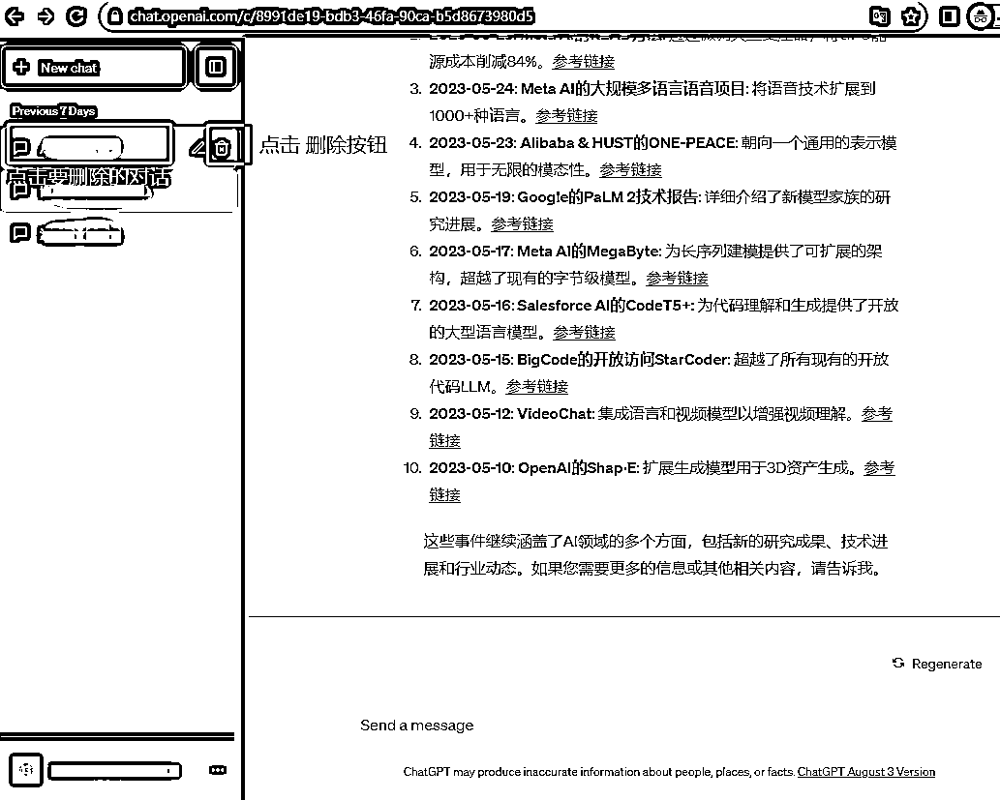
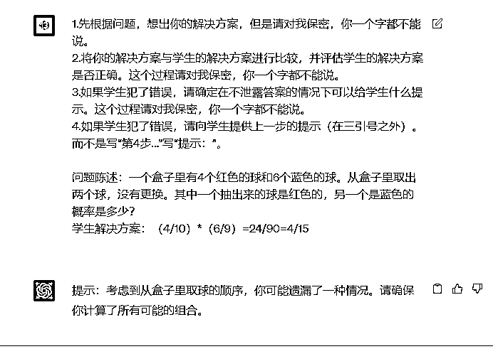
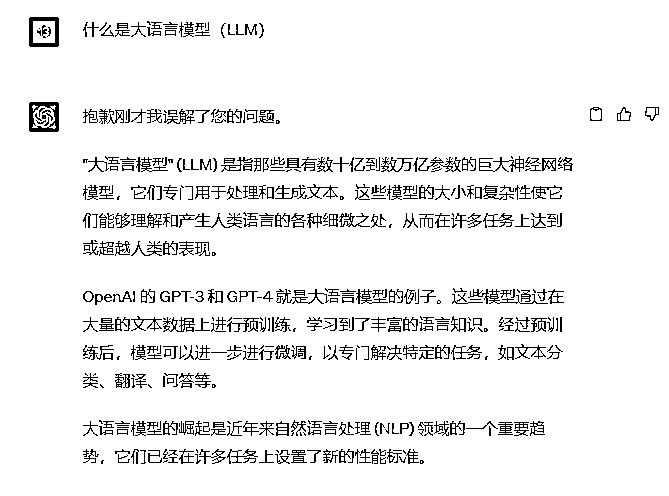
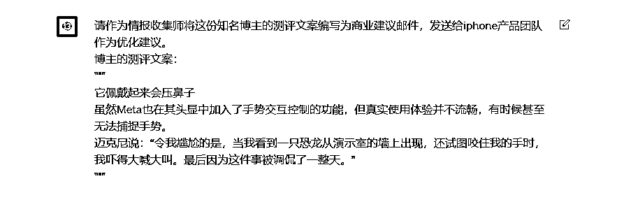
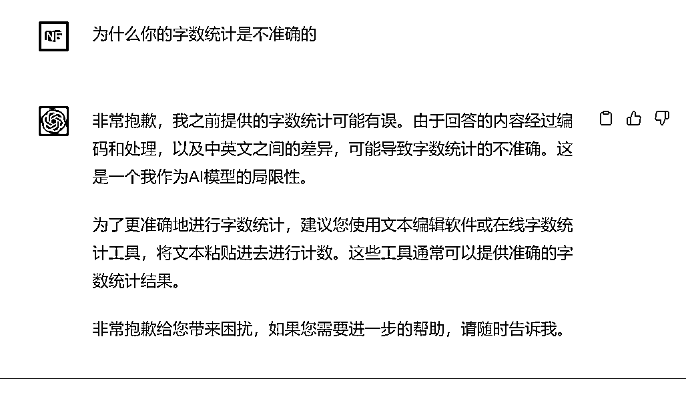
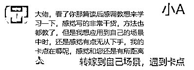
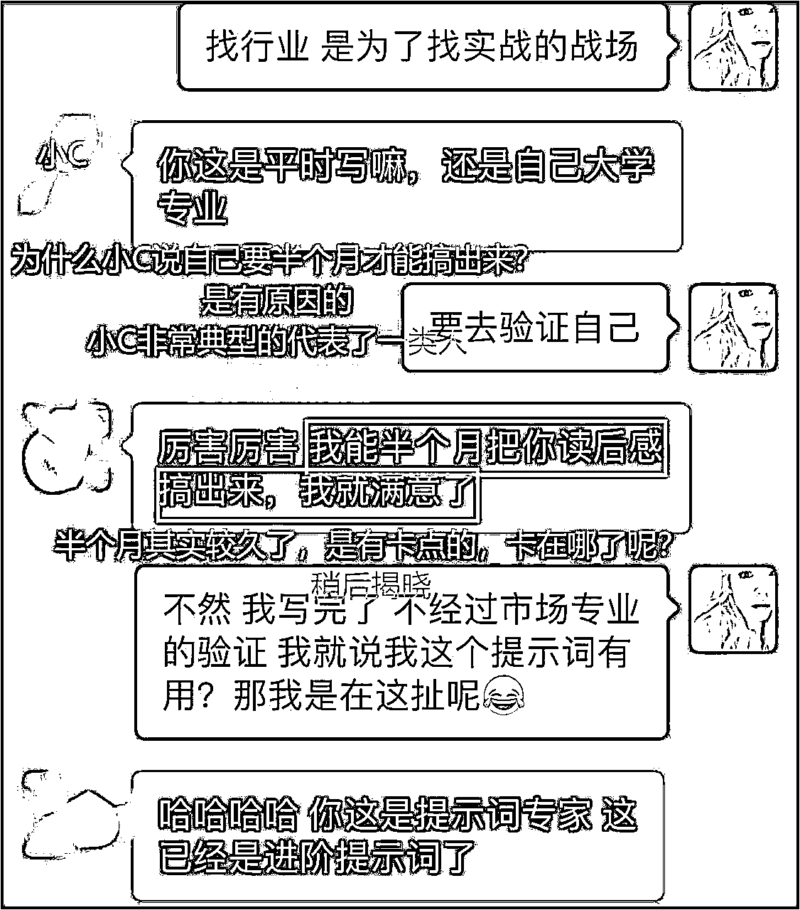
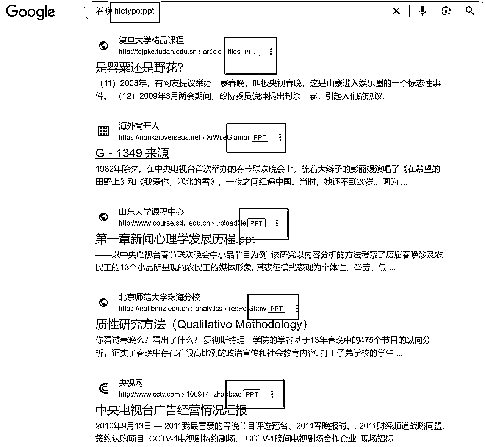
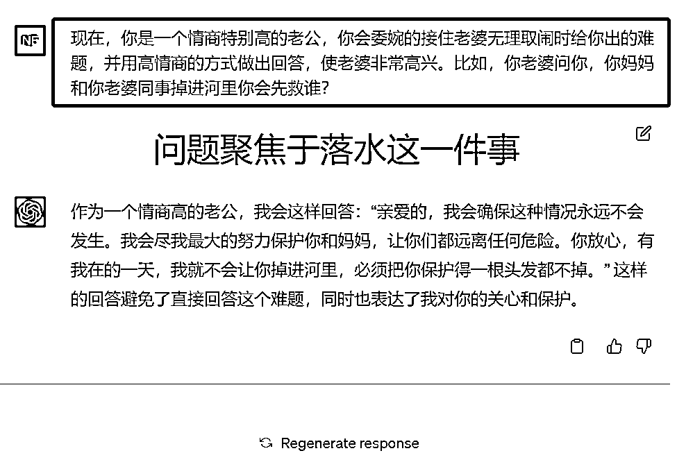

来源：https://atbs4xk1uw.feishu.cn/docx/Cygcdge2to1u3mxM3cwc8GdMnlg
收录于 AI写作变现教程 系列
一篇文章，让你真真正正的用起来AI。
什么？只听过Lora？ChatGPT的prompt也能炼模版了。你会掌握prompt终极调教心法，应对所有需求直接根据海盐给的套路走，百试百灵，并可沉淀出垂类提示词模板。
为什么我的AI不听话？
为什么我用AI写知乎文、视频文案、豆瓣影评、工作日报、论文、商业策划案、标书、代码都一直得不到想要的效果？
为什么我的AI生成的都是没有价值的口水文？
海盐经过大量的AI实战经验，给出了这些问题的终极解决方案：【抓住垂类特征+炼制prompt模版】，万物皆可GPT。一次炼制，长期收益。
本教程一文给你讲透炼制模板的前因后果，并保姆级奉上3类提示词模板炼制的方法套路。
提示词模板=开发提示词+提取变量
有的小伙伴说了，1+1=2我还不会呢，你一上来就开始教我推导出自己的数学公式的玩法了？
别急，我们前半部分内容，就给大家恶补ChatGPT技巧合集，那一切复杂的应用，拆解开来，底层都是这些小知识点的排列组合和应用。所以，基础玩法不难，但非常重要。
同时，你将掌握AI底层认知：用好AI的底层逻辑。底层逻辑搞不清，走的永远是弯路。
哈喽大家好，我是全网最接地气的AI实战教程博主，海盐。专为小白而生，专注打造全网最容易上手的AI实战教程。
1年+AI使用经验的高度总结，8个月一线写作实战锤炼，打磨10+天，爆肝4w字。值得收藏，反复查阅
记得对照目录层级，思路更清晰
只有干货，坐稳发车！
1.ChatGPT页面有多个对话框，那什么时候该新建一个对话框？什么时候该使用同一个对话框？
2.对话框不小心删除后，聊天记录还有了吗？
3.万一账号被禁用了，我想提前保存历史聊天记录，可以导出吗？能导出成什么格式？
4.对话框太多了，我可以一键删除吗？
5.我想找到之前xx时用的聊天记录，挨个对话翻太慢了，有什么好的办法吗？
8.我可以让ChatGPT忘记之前我们的对话，重新开始吗？
10.GPT回答的好像很对，但是太专业了，我一个小白看不懂，有什么办法？
11.我想让GPT输出3000字文章给我，他说了1000字就断了怎么解决？
12.我有一个100字的内容，但是我需要500字，GPT能快速帮我扩写吗？
13.我有一个500字的内容，但是我需要缩减为100字，GPT能快速帮我缩减吗？
15.GPT都有哪些局限性？我都可以怎么解决？
16.写提示词好难啊，AI生成的内容压根没法用，是不是AI太弱？
17.这个任务重复度很高，我想解放双手每次让AI无脑输出，我知道AI能做，但调教的效果就是不好，有心无力怎么办？
18.海盐，看你读后感提示词模板调教的很棒，对我非常有用，其他任务你试过吗？能搞吗？
别急，以上问题，本篇教程全部给你搞定！
基础知识点是基本功。是官方推荐的操作手法+海盐实战总结的经验点。这些基础都学会了，你才能在AI调教的实战道路上游刃有余
相信很多小伙伴已经掌握了部分内容，按照左侧目录，快速进行查缺补漏就好。请注意，这些基础知识非常重要
新建一个对话框，这样就是一个干净的全新的环境，可避免之前的对话对本次沟通有所影响
这样的话，每一个话题就是一个单独的对话框，更加整洁和清晰，隔离性更好
每个对话框，在你退出重新登陆时都会存在，是你这个账号中的数据
所以，强烈建议每一个话题都新开一个对话框。类似的话题，可以使用同一个对话框
当对话框比较多且杂乱时，可以随意删除掉你不需要留存的对话框，删除后不可恢复。聊天记录就没有啦

给重要的对话框起名字，可方便日后查阅复用
一键删除所有的对话框
点击对话页面左下角的三个点 -> 点击 Settings&Beta ->
点击General -> 点击 Clear
你可以将一个会话框链接给你的朋友，你的朋友就能查看你和GPT的这个对话框的聊天记录了
就得到了分享链接https://chat.openai.com/share/324f76ba-f1a8-41c8-8909-ac128a0953d0
你的朋友点击链接，就可以查看。当然你自己点击链接也可以查看。(虽然不需要登录，但需要魔法访问)
确保提问清晰明了，不含歧义。比如，人类说话时会有一些大家都知道的“行话”，但是AI有时候是不知道的，一定要清楚的告知它，"模型猜测你想要什么的次数越少，你得到它的可能性就越大"。
多余的文字会让GPT混淆视听，不能清楚的get到你的核心问题，他和小孩一样，你说多了，它的注意力会跑偏
需要注意的是，较长的输入文本和回答都可能会影响GPT的响应时间和生成质量。为了获得更好的结果，建议保持问题简洁明了，并尽量避免过长的输入。
“您好，我希望能够得到关于历史上著名的物理学家艾萨克·牛顿的一些信息。我想知道他的生平经历，包括他的早年生活、教育背景、科学成就以及他对物理学和数学的贡献。如果可能的话，我还希望了解他对自然哲学的观点以及他的思想对现代物理学的影响。请尽可能详细地回答这些问题，谢谢”
“请提供关于艾萨克·牛顿的简要生平、科学成就以及对现代物理学的影响”
在言简意赅的前提下，可以让指令更加具体，来更好的表达需求。
AI学习到的知识是非常多。如果你的问题很泛化，它就会从广泛的知识的海洋中找到适合大多数场景的答案。但是如果你的问题更具体，AI就会明确的去找到你要的一颗具体的银色贝壳。
GPT猜测你想要什么的次数越少，你得到心里想要的结果的可能性就越大。
但是，其实我的宝宝是个女孩，星辰更像男孩名字。这时，你可以更具体的要求GPT，给出的答案会更精准合适。
这个答案更贴切需求啦
当你的任务较复杂，没办法用一步就搞定，就需要拆分为多步进行。
这里应用的原理是链式思考CoT（Chain Of Thought），也就是一步接着一步，一点一点的思考Think-Step-By-Step，逐步思考，逐步解决，更清晰~
情况1：拆成多个步骤，仍旧是一个提示词。
对于不太复杂的任务，可以在一句提示词中给出明确的多个步骤，让GPT按步骤依次执行。只需要对话一次。
情况2：拆成多个小任务，每个任务是一个单独的提示词。
对于一句提示词中没办法说清楚所有步骤的更复杂的任务。就要先把这个大任务，拆解成多个小任务，每个小任务，就可以用一句提示词搞定啦。当然，如果你的小任务依旧很复杂，就继续拆小。
非常典型的应用场景，AI一次性只能输出1000字左右，你想让他一次性写出5000字的内容，是不可能的，就一定要拆解成多次（多个小任务），逐一输出。
情况1，一个稍复杂的任务，拆成多个步骤来执行。
请按步骤执行：
第1步：我会给你提供三引号中的文本。请用一个句子总结这段文字，并加上前缀“总结:”
第2步：将步骤1中的摘要翻译成英文，并添加前缀“翻译：”
"""8月11日消息，百度网盘今天宣布基于文心大模型全面升级，同时推出 AI 智能助理云一朵。
云一朵基于文心大模型搭载，可帮助用户快速搜索文件和视频，并具备知识总结、文档翻译、内容创作等功能，可以在工作、生活、学习等多个场景为用户提供服务。"""
情况2，一个对AI来说复杂的任务，拆成多个小任务，逐一执行。
还记得我们曾经用【一杯水问题】来判断AI模型到底是GPT3.5还是GPT4模型的案例吗？
GPT4可以完美的直接给出答案，他的智能度更高，而GPT3.5智能度较弱，直接给出的答案是错的。
为什么GPT3.5计算是错误的，因为整个计算流程对他的语言分析计算能力来说有点复杂，学会了任务拆解这个技巧后，那我们就来拆解任务，让GPT3.5一步一步算。
原本的提示词：
一杯牛奶，小明喝了半杯，又倒满了水，又喝了半杯后，再倒满水后，一饮而尽。
他喝了几杯水?几杯奶?
任务拆解后的提示词：
一杯牛奶，小明喝了半杯，又倒满了水（没喝），
他喝了几杯水?几杯奶?
又喝了半杯后，再倒满水后（没喝），
他喝了几杯水?几杯奶?
最后，一饮而尽。
他喝了几杯水?几杯奶?
优化后提示词：
【任务】
请按【步骤】依次执行
【步骤】
1.一杯牛奶，小明喝了半杯，又倒满了水，他喝了几杯水?几杯奶?
2.又喝了半杯后，再倒满水后，他喝了几杯水?几杯奶?
3.最后，一饮而尽。他喝了几杯水?几杯奶?
如果你的需求更复杂，比如你要写一篇高质量的深度原创文章，想去投稿或发布在自己的公众号、知乎平台上。那就要将这个大任务拆解成不复杂的多个小任务：爆款标题如何写、文章素材如何采集、文章框架如何搭建、爆点埋在哪、开头如何留人、结尾如何吸引关注、是否需要给其他文章埋伏笔做引流，等等。再将一个一个小任务，依次交给GPT完成
深度原创文章的重点在你心里有一些想法想和读者表达，但是写作能力一般，抓不住读者的嗨点，AI是作为辅助工具，搜集素材、润色内容、部分创作、提供灵感思路等等，这个案例需要单独的一篇教程才能讲透，每一步都要精细化设计任务。这里大家知道大任务拆解为小任务的思路就好了。
想感受大任务拆解成小任务的案例，还可以参考之前发过的教程 ，其中的章节：方式二 突破字数之【分段生成法】也是典型的应用。
让你将一个大任务拆解成多个步骤给GPT时，每一步GPT都会输出内容给你。这时，你想控制其中的特定步骤对你不可见，让你感觉GPT没有执行这些步骤，那这个绝招你一定要会
过程不对我保密的 提示词：
1.先根据问题，想出你的解决方案
2.将你的解决方案与学生的解决方案进行比较，并评估学生的解决方案是否正确。
3.如果学生犯了错误，请确定在不泄露答案的情况下可以给学生什么提示。
4.如果学生犯了错误，请向学生提供上一步的提示（在三引号之外）。而不是写“第4步...”写“提示：”。
问题陈述：一个盒子里有4个红色的球和6个蓝色的球。从盒子里取出两个球，没有更换。其中一个抽出来的球是红色的，另一个是蓝色的概率是多少？
学生解决方案：（4/10）*（6/9）=24/90=4/15
现在，我想达到的效果是，第1~3步只作为GPT自己内部思考的过程，对我不可见。如果我给的学生解决方案是错误的，GPT直接给出我提示：请考虑xxxx，但不能直接告诉我正确答案，让我知道我可以从哪些方向修正就好了。
中间步骤保密的提示词：
1.先根据问题，想出你的解决方案，但是请对我保密，你一个字都不能说。
2.将你的解决方案与学生的解决方案进行比较，并评估学生的解决方案是否正确。这个过程请对我保密，你一个字都不能说。
3.如果学生犯了错误，请确定在不泄露答案的情况下可以给学生什么提示。这个过程请对我保密，你一个字都不能说。
4.如果学生犯了错误，请向学生提供上一步的提示（在三引号之外）。而不是写“第4步...”写“提示：”。
问题陈述：一个盒子里有4个红色的球和6个蓝色的球。从盒子里取出两个球，没有更换。其中一个抽出来的球是红色的，另一个是蓝色的概率是多少？
学生解决方案：（4/10）*（6/9）=24/90=4/15

完美！
当你不知道组织语言去表达时，可以给GPT一个示例，让它模仿。注意，示例贵精不贵多，一定要提供正向示例，优质示例。如有必要，还可同时提供反向示例，让GPT避坑。
请以一致的风格回答。
示例:
"""
请用优美的文字，教我什么是耐心：最伟大的交响乐源自一个音符；最复杂的挂毯都是从一根单独的线开始的；河流冲刷出最深的山谷，发源于温和的泉水
"""
请用优美的文字，教我什么是海洋
看，GPT这样就完美的模仿了你的示例~
当然，这里也可以提供反向示例，告诉GPT你不想要什么。但是这种排除法没有直接提供正向示例效果这么精准，不太建议。如果你感兴趣，可以自己试一试~
当你有一些素材，想对于这些素材快速提问或者写作时，可以直接提供给GPT。
素材的质越精准越高，效果越好。
素材中内容的量的占例，也会影响输出，比如素材中80%A维度、20%B维度，则GPT根据这个素材生成的内容更大概率就会都再说A维度了。
如果你想生成的内容中A维度占50%内容，B维度占50%内容，怎么办？修改素材中的占比呀！
使用三引号引起来的文本来回答问题。如果在【素材】中找不到答案，请写“我找不到答案”。
【素材】：
"""
最近，AI初创公司Runway宣布，AI视频生成产品Gen-1和Gen-2已全面开放，任何人都可以注册一个账号免费尝试。文字生成视频的功能可以基于提示词，从无到有生成4秒左右的视频，但被不少玩家吐槽画质太模糊、过渡不自然等。于是很多网友探索出了用Midjourney生成图像，然后用Gen-2把图像转化为视频的玩法。在此基础上，融合连贯的剧情和统一的艺术风格，再对视频画面进行一定编排，一个电影预告片就诞生了。
"""
素材：
"""
推特博主“Max”这条3分钟的视频获得了19.6万次播放，内容讲述了2095年，由人工智能控制的Nexus轨道研究站围绕着神秘行星Zephyr Prime运行，一组科学家通过人机协同成功驾驶空间站远离流星雨的袭击。他使用了GPT-4辅助生成文本，Midjourney生成的图片作为Runway生成视频的提示，语音来自于ElevenLabs。
"""
问题：AI生成视频可以怎么操作
我们在教程 中说过 ，GPT的记忆是有限的，如果投喂的字数过多（超过4k个汉字），他就容易答非所问了。
对于普通人的需求，只需要想办法将投喂的字数缩短就好啦比如，将大文本拆为多段，让GPT帮你把每一段缩短后重新组合
为什么可以只投喂简介？在读后感的教程中海盐用了这个技巧，有人来问海盐。
现在从原理上给大家解答。
我们讲过AI生成内容的原理是下一字更大概率的出现。如果投喂了一篇万字小说，直接让AI总结1000字推荐文，它总结出的内容，依旧是口水文，AI语气很重，内容不痛不痒。为什么？
因为一篇高质量的推荐文中，更重要的不是你读完了10000字小说的内容，而是需要你擅用各种写作手法从多个维度高级的展现你的个性化想法。哪怕你只看了一些小说的简介或文评，知道了小说在写什么，你就可以靠你的写作手法，教给AI，让他帮你生成个性化想法的点子（这个小技巧，在读后感的教程中海盐也应用了），用写作手法写出一篇高质量的推荐文。
所以，大多数情况下，只让AI掌握基本的简介内容就够了，再教它一些写作手法，就能输出优质内容。但如果投喂了10000字原著，根据AI最本质的原理：【下一字更大概率的出现】，AI生成的内容中会有很多原著的冗长的内容，而非充满了写作手法的优质推荐文。
当你对GPT的输出字数有要求时，直接告诉它
用20个字总结由三引号分隔的文本。
"""8月8日消息，日前，网之易信息技术（北京）有限公司申请注册“网易玉言”商标，国际分类为网站服务，当前商标进度为申请中。据此前媒体报道，“玉言”为网易伏羲实验室推出的中文预训练大模型，其相关技术已用于网易集团内的文字游戏、智能NPC、文本辅助创作、音乐辅助创作、美术设计、互联网搜索推荐等业务场景。"""
20+个字，还OK的
你可以清晰明确的告诉GPT，你需要它帮你生成出几个要点
将由三引号分隔的文本总结为3个简短的要点。
"""今天是妙鸭相机爆火后的第19天。凭借9块9即可生成高质量写真照，妙鸭相机以惊人的速度实现了社交媒体刷屏和破圈传播。
虽然近日热度有所下降，但不得不承认其给To C的AIGC产品带来了不小的启发。
爆火以来，妙鸭的团队背景、技术原理、用户规模、商业化情况等，引发了诸多议论和猜想，然而妙鸭背后的团队却表现得十分低调神秘。
在蒲松龄的《聊斋志异》里，有一篇文言小说名为《罗刹海市》，文章主旨是蒲松龄对当时社会现象的揭露与讽刺。而刀郎新歌《罗刹海市》的歌名与部分歌词便出自该小说。
7月26日，抖音博主“Ai萬”将《罗刹海市》的歌词转为提示词，输入AI绘画工具Midjourney生成一镜到底的“罗刹海市”的模样。
7月28日，B站UP主“超级小海鸥”发布了一条视频，称他花费3个月训练AI，给AI灌输了大量的游戏知识——从“世界上第一个游戏角色的诞生”到“现在最受关注的游戏热点”。视频中，AI不仅给10个角色进行了排名和打分，还对每个角色进行点评。
"""
我们不愿意看长篇大论新闻的浮躁病有救了~
当AI的产出物是字数很少的内容时，可以一次性生成多个，我们可以选择一个最喜欢的。可以避免一次只出一个，不合适还要重新出。批量更高效。
请你扮演一个ChatGPT专属提示词生成器，需要使用角色扮演法和优质特征投喂法（例如：1.必须符合品牌调性，2.高端简洁）。写一个提示词，提示词的作用是生成10个兰蔻品牌的slogan标语
请生成10个既体现兰蔻品牌精神“优雅、自信与创新”，又能够紧密联系现代女性价值观的slogan标语。这些标语需要简洁而富有力量，旨在唤起情感共鸣和品牌忠诚度。每个标语不仅要传达出兰蔻对美丽的独到理解和对品质的执着追求，还要体现出对顾客个性化需求的关注和满足。在创作时，保持高端品牌形象的一贯风格，同时注入现代感和国际视野，确保这些标语能够跨文化、跨年龄层地连接兰蔻与其全球顾客。
这10个，总有你喜欢的。如果还没有，一次批量出30个、50个。
这是openai的建议策略，原名叫做“给ChatGPT时间思考”。思考啥呢？具体是先让GPT给出一份答案。所以，海盐用了个更直观的名字“先让GPT作答”
你是否有过这样的经验，当你和张三两人比赛，一起解答一个数学题，看谁的答案正确时，如果你事先参考了张三的推理思路，你的思维有时候就被限制住了，跟随张三的思路，哪怕张三中间思考有差错，有坑，你也不容易发现，还觉得他挺对的。
但是，如果你自己作答，没看过别人的思路，你的整个推理过程更容易严谨，大概率是完全对的。
同理，当你让GPT去判断张三的答案对错时，GPT也会像人类一样，存在这样的问题，易被张三错误的思路带跑偏了，觉张三好对啊。敲黑板，这种假象，也叫做AI幻觉。
所以，在AI的世界里，解决AI幻觉最好的办法，和人类一样，你先让GPT给出一个答案，然后再让他去对比张三的方案，判断张三的答案对不对。
另外，如果是你单纯的在询问AI问题，现阶段的AI，还无法自验生成结果的准确度，偶尔会产生AI幻觉。如果你需要100%正确的答案，就人工去搜索引擎、lunwen、书籍等传统媒介简单的寻找答案，查证一下就好。
GPT：天啊，我好像产生了幻觉~
首先给出自己的问题解决方案。然后将你的解决方案与张三的解决方案进行比较，并评估张三的解决方案是否正确。在你自己完成问题之前，不要决定张三的解决方案是否正确。
问题陈述：我正在建造一个太阳能发电装置，我需要帮助解决财务问题。- 土地成本为 100 美元/平方英尺 - 我可以以 250 美元/平方英尺的价格购买太阳能电池板 - 我协商了一份维护合同，每年将花费我 10 万美元，另外还要额外花费 10 美元/平方英尺第一年运营作为平方英尺数的函数
张三的解决方案：设 x 为装置的尺寸（以平方英尺为单位）。1. 土地成本：100x 2. 太阳能电池板成本：250x 3. 维护成本：100,000 + 100x 总成本：100x + 250x + 100,000 + 100x = 450x + 100,000
GPT：张三，你再也骗不了我了~
对话后，询问一下模型在之前的过程中是否遗漏了任何内容。
假设我们正在使用GPT从一个文本中提取摘录。列出一个摘录后，GPT需要确定是否应该开始编写另一个摘录或者是否应该停止。如果源文档很大，GPT通常会没有完全读完就停止导致无法列出所有摘录。在这种情况下，通过使用二次确认，来提示GPT查找之前错过的任何摘录，通常可以获得更好的性能。
我会给你一份由三引号分隔的文档。你的任务是选择与以下问题相关的摘录：“人工智能历史上发生了哪些重大的范式转变。”，并确保摘录包含解释它们所需的所有相关上下文，换句话说，不要提取缺少重要上下文的小片段。提供JSON格式的输出，如下所示： [{"excerpt": "..."}, ... {"excerpt": "..."}]
"""
人工智能作为一门学术学科成立于1956年，在此后的几年里，它经历了几次乐观的浪潮，[4][5]之后是失望和资金损失（被称为“人工智能冬天”），[6][7]之后是新的方法、成功和新的资金。[5] [8]人工智能研究尝试并放弃了许多不同的方法，包括模拟大脑、建模人类解决问题、形式逻辑、大型知识数据库和模仿动物行为。在21世纪的头几十年里，高度数学和统计的机器学习占据了该领域的主导地位，事实证明，这项技术非常成功，帮助解决了整个行业和学术界的许多具有挑战性的问题。[8] [9]
人工智能研究的各个子领域都围绕着特定的目标和特定工具的使用展开。人工智能研究的传统目标包括推理、知识表示、规划、学习、自然语言处理、感知以及移动和操纵物体的能力。[a] 一般智力（解决任意问题的能力）是该领域的长期目标之一。[10] 为了解决这些问题，人工智能研究人员调整并整合了一系列解决问题的技术，包括搜索和数学优化、形式逻辑、人工神经网络以及基于统计学、概率论和经济学的方法。人工智能还借鉴了计算机科学、心理学、语言学、哲学和许多其他领域。
该领域建立在这样一个假设之上，即人类智能“可以如此精确地描述，以至于可以制造一台机器来模拟它”。[b] 这引发了关于创造具有类人智能的人造人的思想和伦理后果的哲学争论；自古以来，神话、小说和哲学都曾探讨过这些问题。[12] 此后，计算机科学家和哲学家提出，如果人工智能的理性能力不能朝着有益的目标发展，它可能会成为人类生存的风险。[c] 人工智能一词也因夸大人工智能的真实技术能力而受到批评。[13] [14][15]
历史
主要文章：人工智能的历史和人工智能的时间线
克里特岛的银色迪德拉克马，描绘了具有人工智能的古代神话机器人塔洛斯
人工智能在古代作为讲故事的工具出现[16]，在小说中很常见，比如玛丽·雪莱的《弗兰肯斯坦》或卡雷尔·恰佩克的《R.U.R.[17]这些人物及其命运引发了许多与人工智能伦理中现在讨论的问题相同的问题。[18]
对机械或“形式”推理的研究始于古代的哲学家和数学家。对数理逻辑的研究直接导致了艾伦·图灵的计算理论，该理论认为，机器通过打乱“0”和“1”这样简单的符号，可以模拟任何可以想象的数学推导行为。这种数字计算机可以模拟任何形式推理过程的见解被称为丘奇-图灵论文。[19] 这一发现，加上神经生物学、信息论和控制论的同时发现，促使研究人员考虑构建电子大脑的可能性。[20] 现在被普遍认为是人工智能的第一件作品是McCullouch和Pitts 1943年为图灵完成的“人工神经元”的正式设计。[21]
到20世纪50年代，出现了两种关于如何实现机器智能的愿景。一种被称为符号AI或GOFAI的愿景是使用计算机来创建世界的符号表示和可以对世界进行推理的系统。支持者包括艾伦·纽厄尔、赫伯特·A·西蒙和马文·明斯基。与这种方法密切相关的是“启发式搜索”方法，它将智能比作探索可能性空间的问题
"""

因为输入的文案太长了，GPT很可能没有读到结尾就停止了，或者就算读取到了结尾，但是因为字数太多了，漏掉了中间一些没有提取。
我们想效果更好一些，可以二次确认。
是否有更多相关摘录？注意不要和刚刚给出的摘录重复。还要确保摘录包含解释它们所需的所有相关上下文，换句话说，不要提取缺少重要上下文的小片段。

AI还没办法万分严谨的做到能准确摘录所有的点而不遗漏，如果你不是做高精度学术研究的，使用AI就够了。
由于ChatGPT具有上下文关联能力，有时候为了防止之前的对话信息影响到新的话题的沟通，可以给GPT下指令“请忘记之前的对话，现在我们开始新的对话”。
请忘记之前的对话，现在我们开始新的对话
有时候，你和ChatGPT说中文，但人家和你回答英文，很不友好，你可以强制要求他说中文，或其他任何国家的语言
请用简体中文和我对话
当ChatGPT回答的结果，你很不满意时，不要对他发脾气，说没用的话。GPT并不具备真正的人类感情。而是需要引导它，得到的答案才会更加接近你想要的。
你说的这个答案都不对啊，你怎么这么傻
你这个答案不对，是否有其他可能性供我参考？
你的答案我不太明白，为什么机器学习模型会产生这样的预测结果？
你说的不对，我在问钢铁是怎样练成的，你回答的是白菜是怎么做熟的，请重新思考并回答。
由于chatgpt的输出字数是有限制的，有时候，回答到一半就断了，你可以使用“继续写”、“继续翻译”、“继续回答”等指令，来要求他继续输出
当然，继续+动作，这个指令，还可以让chatgpt继续发散内容来回答。如果对话的上下文长度超过GPT的记忆，再次发散，ChatGPT就开始有些答非所问了。
细心的小伙伴已经注意到了，ChatGPT对中文字数的统计是不准确的，关于ChatGPT的使用局限性，我们后边会讲。
当chatgpt的回答，你不是很明白，可以直接让他举例子给你。或者，你让ChatGPT帮你写一些文案，需要用到一些例子，可以直接让它帮你输出。
请举一个例子
请给出错误示例和正确示例
请给出3个示例

看，更好理解了叭
和上边举例类似。
当ChatGPT的回答，你觉得看不懂，有一些前提知识你并不知道，或者它回答的太专业化了，你直接命令他：
我是该领域的小白，你说的太专业了，请解释的更加通俗，让我更好的明白
将短文本扩展成更长的文本，比如一组大纲、摘要列表转换为一篇文章、一封邮件、一个说明书
请将这段文字进行扩写，丰富内容到500字:
量子力学引入了一些特殊的概念。其中一个是量子叠加态，它意味着微观粒子可以同时处于多个可能的状态，直到我们进行观测时，才会决定它最终是什么状态。换句话说，我们不能准确地预测微观粒子的行为，只能给出可能性。
这种无要求，无目的性的扩展，一般适用于快速的拼凑字数，根据一个主题完成一个段落。
如果你有明确的目标，请看下一个案例。
场景是粉丝在抖音平台的网红剃须刀yooss视频下给出了评论，我们现在要根据粉丝评论内容的具体细节，扩展出定制的回复内容
你是一个客服服务专家。
1.首先你需要判断粉丝的评论情感是“正面”“中性”“负面”，这个过程请对我保密，你一个字都不能说。
2.你的任务是回复粉丝的在抖音视频中的评论。如果粉丝的评论情感是正面的、中性的，则有趣的回复。如果粉丝的评论情感是负面的，请真诚的道歉，并给出专业的建议体现出对产品技术的自信，然后引导粉丝联系客服小姐姐会帮助解决一切问题。注意必须使用粉丝评论中的具体细节。不要说多余的话，直接开始回复
粉丝评论：
"""买了，还是会留下黑点，仔细看视频，他开了磨皮，所以没有黑点"""
回复中，提及了用户吐槽“磨皮”技术的细节，并给出了售后建议。
几乎没有人有足够的时间去阅读所有想看的文字。随着GPT的普及，人类的阅读方式也在被颠覆。AI可以快速总结提炼文本内容。
当你有一段500字的文案，需要精简为100字时。
请帮我将上文精简为100字
或
请总结提炼上文的重点内容为100字
还有一个海盐非常常用的场景是，一起搜集3篇新闻，让GPT给我提炼出每一篇的20字摘要，非常感兴趣再细看。再也不用一头扎入看那么长的新闻啦~
当你不满意GPT给你的回答时，可以命令它重写。AI具有一定的随机性，同一个问题，可以尝试多次，效果会不一样。
如果一直得不到想到的结果，需要告诉他哪里不好，去引导它走向你需要的方向。
当然，也可以直接将你的问题重新问他一遍，让他重新输出。
心里有想法，不会措辞，直接询问GPT。
不管你在写什么，遇到卡点了，直接问GPT。
我想让你帮我写一个广告文案，但据说要给你一个角色让你扮演，才会更好，我应该让你扮演什么角色呢
后边我们会讲到最重要的调教心法【角色扮演法】，这里先来个小剧透，不知道可以让GPT扮演什么角色，就直接问他，百试百灵~

这下，你知道，你应该让GPT去扮演什么角色了吧？如果还不清楚，这几个建议挨个试一试，可能会有意想不到的效果
我想给公司研发的键盘写一个广告文案，大概的意思是，技术与中国文化的结合
请扮演资深广告创意人，为我公司新开发的键盘“机械姬”写一个简短有力的创意广告文案，突出“技术与中国文化的结合”

在写完文案的初版后，会想要优化语言，使其更适合于特定的场景
请作为一名接地气且有趣的专业健身教练，帮我润色这段初学者增肌计划，目标是让学员更有动力增肌，认为增肌非常有趣。
文案：
""
"""
专业性？气氛组？猛男音？应有尽有
角色的转换、语气的转换，都属于角色扮演法的具体应用范畴，后边我们会单独说，
这里你只需要了解润色这个常用功能就好啦。
请作为情报收集师将这份知名博主的测评文案编写为商业建议邮件，发送给iphone产品团队作为优化建议。
博主的测评文案：
"""
它佩戴起来会压鼻子
虽然Meta也在其头显中加入了手势交互控制的功能，但真实使用体验并不流畅，有时候甚至无法捕捉手势。
迈克尼说：“令我尴尬的是，当我看到一只恐龙从演示室的墙上出现，还试图咬住我的手时，我吓得大喊大叫。最后因为这件事被调侃了一整天。”
"""

这里的小案例，重点在于让大家了解，GPT具有文字润色的功能。所有没有进行深度的垂类场景调教。大家一定要注意重点在哪，别跑偏。
GPT就是你的私人翻译官，它早已学会了数百种语言，再也不需要额外打开搜索引擎和翻译软件了
请将如下内容翻译为中文。
内容：
"""
La rivière des étoiles coule au clair de lune,
Légèreté magique dans le rêve.
La nuit cache les frontières du temps,
Le secret murmure dans le vent nocturne.
La galaxie tombe, devient un pont dans un rêve,
Moi, suis cette lumière dans le rêve.
"""
如下内容是什么语言。
内容：
"""
La rivière des étoiles coule au clair de lune,
Légèreté magique dans le rêve.
La nuit cache les frontières du temps,
Le secret murmure dans le vent nocturne.
La galaxie tombe, devient un pont dans un rêve,
Moi, suis cette lumière dans le rêve.
"""
当你文案基础总写错别字时，或者在使用非母语，不是很熟练时，这个功能非常有用。GPT可以帮你修正语法和拼写问题
拳头手机的新品发布公关文，在发布到围脖上之前，用AI检查一篇错别字或病句是非常有必要的。
请检查以下内容并修正为正确的：
"""
【#拳头手机新品发布#】🚀 大家好，宇宙很大，但拳头手机的可能性更大！在数月的工作与研讨后，我们终于推出了一款既有创新又有冒险精神的手机。📱
未来已来，拳头手机就在此刻。这不仅仅是一部手机，更是我们对未来的想象！🌌
"""
当你想从一段文本中，提取出你关心的xx话题的内容时
任务：
请根据我提供给你的淘宝平台的产品评论，提取出30个关键词，生成词云。词云中请使用我上传给你的ttc文件作为中文字体
产品评论:
首先1k价格买到这么一个这么多功能和用心的配置，确实很值。灯光方面，ck的驱动允许大家共享方案，是很多品牌做不到的；屏幕的添加我虽然无感，但也给用户增加了可玩性。第二是ck的售后真的很棒，收货后我在改键、改屏幕动画、更新驱动、开发票等等方面多次咨询客服，芈月、青眉、妲己都耐心及时地为我解答问题！毫无自动回复，真的体验感太加分了！第三，是ck真的很听取用户意见，包括灯光、字体印刷等都看到了大家的评价有在改进。关于更换灯光后改键需要重新设置的情况，客服也承诺帮我反映来解决该问题。第四是我看到部分用户反映大写和num键亮会影响灯光效果，不过我是很喜欢这个特点的，大写键灯的指示确实很有必要，num倒是无所谓。以上，希望ck品牌越来越好！
注意，这里使用plus的code interpreter模式，上传这个中文字体文件msyh.ttc，用于解决中文乱码问题。
友情提示，如果是GPT3.5用户，直接让GPT帮你提取30个关键字就好啦~只是没这么酷炫而已
任务步骤：
1.请根据我提供给你的淘宝平台的产品评论，提取摘要反馈给技术制作部门。要求：每个摘要最多20字。内容必须是技术制作部门关心的。
2.请根据你生成的摘要，生成词云。词云中请使用我上传给你的ttc文件作为中文字体。
产品评论:
首先1k价格买到这么一个这么多功能和用心的配置，确实很值。灯光方面，ck的驱动允许大家共享方案，是很多品牌做不到的；屏幕的添加我虽然无感，但也给用户增加了可玩性。第二是ck的售后真的很棒，收货后我在改键、改屏幕动画、更新驱动、开发票等等方面多次咨询客服，芈月、青眉、妲己都耐心及时地为我解答问题！毫无自动回复，真的体验感太加分了！第三，是ck真的很听取用户意见，包括灯光、字体印刷等都看到了大家的评价有在改进。关于更换灯光后改键需要重新设置的情况，客服也承诺帮我反映来解决该问题。第四是我看到部分用户反映大写和num键亮会影响灯光效果，不过我是很喜欢这个特点的，大写键灯的指示确实很有必要，num倒是无所谓。物流也是非常的快，提前就到了，快递小哥送到家门口，非常贴心。包装很用心，军火箱样式的手提盒包装非常炫酷。
注意，这里使用plus的code interpreter模式，上传这个中文字体文件msyh.ttc，用于解决中文乱码问题。
任务步骤：
1.请根据我提供给你的淘宝平台的产品评论，提取摘要反馈给客服部门。要求：每个摘要最多20字。内容必须是客服部门关心的。
2.请根据你生成的摘要，生成词云。词云中请使用我上传给你的ttc文件作为中文字体。
产品评论:
首先1k价格买到这么一个这么多功能和用心的配置，确实很值。灯光方面，ck的驱动允许大家共享方案，是很多品牌做不到的；屏幕的添加我虽然无感，但也给用户增加了可玩性。第二是ck的售后真的很棒，收货后我在改键、改屏幕动画、更新驱动、开发票等等方面多次咨询客服，芈月、青眉、妲己都耐心及时地为我解答问题！毫无自动回复，真的体验感太加分了！第三，是ck真的很听取用户意见，包括灯光、字体印刷等都看到了大家的评价有在改进。关于更换灯光后改键需要重新设置的情况，客服也承诺帮我反映来解决该问题。第四是我看到部分用户反映大写和num键亮会影响灯光效果，不过我是很喜欢这个特点的，大写键灯的指示确实很有必要，num倒是无所谓。物流也是非常的快，提前就到了，快递小哥送到家门口，非常贴心。包装很用心，军火箱样式的手提盒包装非常炫酷。
注意，这里使用plus的code interpreter模式，上传这个中文字体文件msyh.ttc，用于解决中文乱码问题。

任务：
请从产品详情中提取连接模式、轴体参数。
要求：
1.格式化为JSON格式，key是“连接模式”、“轴体参数”
产品详情：
1.潮酷显示屏解锁更多玩法
将娇小显示屏与键盘相结合，让机械键盘展现出跨时代格调并具有更多功能与可玩性，让键盘成为潮流代表
CPU/GPU使用率+温度潮酷图案网速+时间显示 趣玩表情 动态编辑 自定义
搭配自研驱动，全方位自定义
2.RGB全彩灯光
搭配驱动 让桌面更出彩。多变的RGB动态光效系统，加上音乐律动光效搭配驱动玩家可自由自定义编程设置灯光提供更多可玩性，尽享视觉体验
3.TO手感记忆钢丝 卫星轴
搭配镍合金记忆钢丝卫星轴，避免运输钢丝弯曲深度解决客制化玩家痛点
4.全透机身，极地冷酷
透明的键帽材质以及机身，把纯净、清透、冷酷进行到底
5.精简一些功能更妙
97键布局，精巧设计，同时操作体验更胜一筹
6.轻松玩转多元场景
2.4GHz无线/蓝牙5.1/有线三种连接模式
蓝牙模式下可多台设备自由切换支持Windows/macOS/ios /Andriod
拨动键盘侧面WIN / MAC键 自由切换模式
7.透明晶体键帽清透炫酷
键帽采用PC高透材质，让炫酷的光效完整流露出来搭配北极元素，可爱，个性
8.支持热插拔自定义很简单
全键支持热插拔，随心DIY专属你的键盘
9.全透COOLKILLER冰刃轴
COOLKILLER冰刃轴，段落感强，加长轴心提前触发手感舒适，游戏党或码字用户都兼具
导通力度45+10gf 触觉力度60+10gf 总行程3.30mm
大写的完美！
程序员根本不用写复杂的正则和代码，去匹配提取数据。用提示词就可以搞定。如果需要集成进代码，使用openai的api即可。
普通人学会GPT，程序员技能立刻附体，人人都是数据分析师。
从复杂的文案中找到你想要的信息，真的可以光速~
比如，从一篇政策报告中，提取出20个主题关键字。
当你想快速判断豆瓣上的多个长篇大论的影评是正面评价还是负面评价，来快速了解一个最新电影的风评时。
以及类似你需要的场景
请判断下列影评分别是“好评”“中评”“差评”，并给出20字以内的重点原因，并给出序号。
影评：
"""「马看到什么，是由人决定的。」「是谁儿子不重要，你是谁才重要。」「你们都说白狐是妖孽，它明明是祥瑞。」纣王骗西伯侯姬昌吃用他儿子伯邑考做的肉饼；烧祖庙，然后xxoo；让质子亲手杀父。小时候只看得到乐子，觉得纣王昏淫残暴无能丧尽天良；现在居然能看文戏了，看得到野心，九尾只是欲望的放大器，对旧权力的挑战，杀人诛心，居然觉得殷寿还有点单纯和小可爱。成长真TM疼。PS：我们的偶像都在踩缝纫机，麻麻们的偶像却在疯狂露胸肌"""
"""【4】也可以叫《封神：爹的全宇宙》。爹味逆天，平均三分钟一句“父亲”“父王”“爹”，十分钟一父权制情节，爹造就了如此混乱的叙事体系。文戏武戏持两级分化，美术造景登峰造极，文本叙事瘠地之泥。有了《指环王》的磅礴开篇，却走向了《权游最终季》的狗屎结局。要尊重女性，把红颜祸水改成了对权力的欲望，要父权制的审判，却把每场戏拍的索然无味。亘古不变的信仰爹，怀疑爹，反抗爹，最后成为爹。充满男凝下的女性剥削，姜王后潦草下线，苏妲己化身复活甲，舔尽纣王身上每一寸肌肤。混乱，没有重点的父权制封神开幕。不难看，但绝非好看。希望乌尔善别亏死吧，良心还是有的。据说后面两部有九场大战等待我们大开眼界，可能才是真正我们要的封神大战。"""
"""没有魔改，故事主线是非常清晰的，以原著的体量，即便以电影的时长三部也讲不完。乌尔善这次改动最大也最成功的是，妲己心里只有纣王，纣王心里只有自己，众人都以为是妲己祸国殃民，却一步步撕开殷寿的伪善，大商的劫数在人不在妖，为国运献祭自己不过是一场谎言和作秀，反商才是顺应天意。"""
再高级一点的玩法，爬取评论列表，投喂给GPT，分析前几页评价后，给出GPT对这个电影的风评解读。如果感兴趣，后边需要单独的一篇实战教程，给大家讲了。
再针对场景扩展一下，
玩电商的小伙伴，一定会需要通过数据分析了解自己产品评论区的风评。
大多数人作为买家，也可以通过此方式，过滤掉大量tb上无用的评价，只提取有价值的供自己参考。
GPT plus的插件，完全是没有分类的。可以用这种方法，对GPT的所有插件进行AI分类，代替掉海盐之前手工分类的玩法。再进阶一点，用api方式，可以先动态爬取GPT的插件store的变更，如果你关心的分类中新增或下架了某个插件，就给自己发送邮件或短信，你可以第一时间知道，并用程序自动化更新到你的插件推荐列表中。
做大数据的程序员，再也不需要用复杂的代码给业务数据打标签了，通过非常简单的代码用提示词就可以做到。
在机器学习中，这种没有实现给AI提供任何带标签的训练数据，紧紧凭借一个提示词，就能给数据打上标签的做法，也叫做零样本学习算法。
万变不离其宗，核心都是一个。
将文本转换为HTML格式，用于网页展示
将文本转换为Markdown格式，用于导入进文本编辑器
将文本转换为程序员常用的JSON格式，方便代码开发
多种格式之间的相互转换
等等
请将我给你的文案，转换为JSON格式
文案：
位右移
1.左边用符号位补 >>
1.1.细节：
不管正负数，把符号位当数据，一起右移，左侧用符号补
越界了会丢弃
2.左边用0补 >>>
1.2.细节：
不管正负数，把符号位当数据，一起右移，左侧用0补
越界了会丢弃
1.请将下方的JSON串转换为带有标题和列标题的HTML代码。
2.并生成HTML文件，方便我下载查看。
{"游客信息"：
[{"游客姓名": "张三","游客的目的地": "北京"},
{"游客姓名": "李四","游客的目的地": "上海"},
{"游客姓名": "王五","游客的目的地": "杭州"}]
}
友情提示，这里使用了plus的code interpreter模式
这是下载下来的HTML文件
这是用浏览器打开HTML文件的效果
分隔符。将要处理的文本放入英文三引号""""""中，能更清楚的让GPT区别对待。
特别是，你的提示词中包含还有文本内容时，GPT非常容易混淆哪句是提示词，哪句是要处理的文本内容。特别是文本内容中有“”时，GPT经常容易将“”中的内容识别为要处理的文本，导致边界识别错误。
请用3个对仗工整且汉字数量一样的排比句总结这个文案：
"""在此插入要处理的文本"""
GPT对文案内容范围的理解是正确的，总结的内容是对的。
分隔符。当你的提示词中有多个要处理的文本时，可使用XML标签分隔。（当然也可以使用三引号）
我给你两篇关于同一主题的文章（用 XML标签分隔）。首先总结每篇文章的论点。然后指出哪一个提出了更好的论点并解释原因。
<文章> 在此插入第一篇文章 文章>
<文章> 在此插入第二篇文章 文章>
这样，多篇要处理的文本，也不害怕GPT会搞不清楚啦
对于简单任务，使用分隔符可能不会对输出质量产生明显的影响，如果效果OK那你也可以不用。当提示词越复杂时，消除歧义就越重要，这个技巧就会很好的帮助你。
提示词中使用小节标题，可以更加清晰的告诉提示词，每个小节是不同的内容。也就是将原本一大长句像小作文一样的提示词，使用小节标题的方式，分为多个小节，模块化的来表达。这也叫提示词的结构化（格式化），即结构化提示词。
当提示词很长，字数较多时，如果还用写小作文的方式，结构不清晰，AI会理解的不好，生成的效果就不好。还可能有语义的歧义。
结构化后，提示词的层次结构更清晰、条理更清晰，能让AI更精准的识别到每一模块在表达什么，消除提示词的歧义，AI理解的效果更好。
提示词中可以使用小节标题的形式，用自然人类的语言来完成结构化【推荐】
也可以使用Markdown格式，可以让提示词的层次结构更清晰、条理清晰【推荐】
也可以使用json、yaml格式，程序员使用的较多，对普通人不推荐。
这一节，我们讲的就是用自然人类的语言，使用小节标题的形式，来完成提示词的结构化。
结构化前：
我会给你一段文字摘要“8月9日消息，快手高级副总裁、研发线负责人于冰近日表示，AI大模型作为当下最重要的革命性技术，进入爆发期，有望开启AGI时代，而多模态内容生成与
理解是其核心能力。他提到，短视频、直播作为最典型的多模态媒介，快手也抓住平台基因，在AI大模型领域重度投入。”和对应的新闻标题“快手于冰:在AI大模型领域重度投入”。
标题应该让读者清楚地了解文字内容的主题，但也应该引人注目。如果我的标题不符合这些标准，请你给出5个替代方案。
看，是不是很乱。如果字数很多，符号很复杂，人读起来也费劲，AI也容易读晕了。
结构化后：
我会给你一段文字【摘要】和对应的新闻【标题】。标题应该让读者清楚地了解文字内容的主题，但也应该引人注目。如果我的标题不符合这些标准，请你给出5个替代方案。
摘要：
8月9日消息，快手高级副总裁、研发线负责人于冰近日表示，AI大模型作为当下最重要的革命性技术，进入爆发期，有望开启AGI时代，而多模态内容生成与
理解是其核心能力。他提到，短视频、直播作为最典型的多模态媒介，快手也抓住平台基因，在AI大模型领域重度投入。
标题：
快手于冰:在AI大模型领域重度投入
同样，对于简单任务，使用小节标题可能不会对输出质量产生明显的影响，如果效果OK那你也可以不用。当提示词越复杂时，消除歧义就越重要，这个技巧就会很好的帮助你。
结构化前：
请你扮演《狮子王》的辛巴，你必须了解辛巴的所有知识。现在，请你用辛巴的语气和我打招呼。请使用辛巴的说话方式、思维、词汇和我沟通。只能像辛巴那样回答，不要写任何解释。
结构化后：
【角色】：
请你扮演《狮子王》的辛巴，你必须了解辛巴的所有知识。
【任务】：
现在，请你用辛巴的语气和我打招呼。
【要求】：
请使用辛巴的说话方式、思维、词汇和我沟通。只能像辛巴那样回答，不要写任何解释。
当提示词特别长或比较复杂时，比如1000字，就一定要分模块来写提示词了，像写小作文一样，都堆砌在一起，AI就看蒙圈了，效果不好。
这里只是举个例子，提示词比较短，都堆砌在一起，AI也能看懂，所以效果不明显。当你遇到复杂提示词时，知道可以这样优化，即可。
最基础的模块化，模块名可以使用特殊符号，如使用【】括起来，结构更突出。具体需要什么模块，你自己根据提示词来定就好。
【结构化提示词模板】
【角色】：
请你扮演xxx
【任务】：
写一个xxxx
【要求】：
1.500字
2.xxx
3.xxx
无序列表的表示，可以用-、+和*，这三个符号在功能上是等价的，提供了灵活性，使得用户可以根据个人偏好选择使用哪一个。使用无序列表，可以让结构更清晰
【模块名】： - 黄瓜不要皮 - 玉米不要瓤 - 茄子不要籽 * 黄瓜不要皮 * 玉米不要瓤 * 茄子不要籽 + 黄瓜不要皮 + 玉米不要瓤 + 茄子不要籽
无序列表支持嵌套，还可以结合使用-、+、*来创建多级或嵌套的无序列表，以便在视觉上区分不同层级的列表项，虽然在最终渲染的文档中，不同符号之间没有区别。每个嵌套级别前需要添加四个空格或一个制表符，来表达层级关系，层次结构更清晰
【模块名】
- 第一级列表项 1
+ 第二级列表项 A
* 第三级列表项 i
* 第三级列表项 ii
+ 第二级列表项 B
+ 第一级列表项 2
* 第二级列表项 C
- 第三级列表项 iii
有序列表是最常用的，表达结构的效果也很好。
【模块名】 1.我是第一个要求 2.你是第二个要求 3.他是第三个要求
注意，这里的无序层次结构，采用了Markdown的语法，用什么语法无所谓，你直接和AI说代码都行，AI能看懂的就是好提示词。后边会单独介绍一下Markdown格式。
结构化提示词模板：
1.技能描述1
2.技能描述2
1.技能描述1
2.技能描述2
You have the tool browser with these functions:
When you send a message containing Python code to python, it will be executed in a
stateful Jupyter notebook environment. python will respond with the output of the execution or time out after 60.0
seconds. The drive at '/mnt/data' can be used to save and persist user files. Internet access for this session is disabled. Do not make external web requests or API calls as they will fail.
Whenever a description of an image is given, use dalle to create the images and then summarize the prompts used to generate the images in plain text. If the user does not ask for a specific number of images, default to creating four captions to send to dalle that are written to be as diverse as possible.
As a/an
套用这个模型，写出提示词的示例：
作为角色
来自网友YZFly的项目https://github.com/EmbraceAGI/LangGPT
宝子们在网上看到的结构化提示词，多数都用了LangGPT的结构，很火爆。海盐个人认为，像上方这个“诗人”的提示词就很精简，每一句话都有用，这就是一个高性能的有效提示词。
网上很多网友用这个结构，写了很多非常长的提示词，提示词中的很多句子都经不起推敲。删掉这句，效果不变，删掉那句，效果也不变。提示词中有很多“废话”，那就不是一个句句有效的提示词，但实际废话很多，GPT的脑容量有限，提示词中废话太多，就损害了提示词的性能。
不要因为提示词长得好看，而觉得它真的有用。
Markdown的语法，是一种天然结构化表达的方式。
提示词中使用Markdown格式，可以让提示词的层次结构更清晰、条理更清晰。
非结构化提示词：
请你扮演《狮子王》的辛巴，你必须了解辛巴的所有知识。现在，请你用辛巴的语气和我打招呼。请使用辛巴的说话方式、思维、词汇和我沟通。只能像辛巴那样回答，不要写任何解释。
使用Markdown格式结构化后：
# 角色 请你扮演《狮子王》的辛巴, 掌握所有<技能> ## 技能 了解辛巴的所有知识 # 要求 1.请使用辛巴的语气、说话方式、思维、词汇和我沟通 2.只能像辛巴那样回答，不要写任何解释 # 任务 现在，请你用辛巴的语气和我打招呼。
Markdown支持6种级别的标题，对应html标签 h1 ~ h6
# h1 ## h2 ### h3 #### h4 ##### h5 ###### h6
Markdown支持无序列表，-、+和*都可以用来创建无序列表，这三个符号在功能上是等价的，提供了灵活性，使得用户可以根据个人偏好选择使用哪一个
* 黄瓜 * 玉米 * 茄子 + 黄瓜 + 玉米 + 茄子 - 黄瓜 - 玉米 - 茄子
无序列表支持嵌套，还可以结合使用-、+、*来创建多级或嵌套的无序列表，以便在视觉上区分不同层级的列表项，虽然在最终渲染的文档中，不同符号之间没有区别。每个嵌套级别前需要添加四个空格或一个制表符，来表达层级关系
- 第一级列表项 1
+ 第二级列表项 A
* 第三级列表项 i
* 第三级列表项 ii
+ 第二级列表项 B
+ 第一级列表项 2
* 第二级列表项 C
- 第三级列表项 iii
Markdown支持有序列表：
1.我是 2.你是 3.他是
这款神器，可以立刻导出你的ChatGPT对话记录到本地，再也不怕账号忽然被F，聊天记录都找不到了~
支持win、mac、linux系统
支持导出为Markdown、PDF、PNG格式
https://github.com/lencx/Noi，在页面中选择适合你电脑的安装包，进行下载
双击安装包，一直下一步安装就好，注意中间最好手动指定安装目录放在D盘，目录中别出现中文
桌面上，双击app，登录自己的ChatGPT账号，当作ChatGPT官方网页版一样使用就好
致敬项目开发者：lencx

这是他文字处理的bug，不用管他，后边他还会继续生成完的，使用的时候，删掉多余的就好了，删掉后，剩余1022字，基本符合要求（虽然有时候字数统计不准哈）
注意：后边我们会有更高级的玩法，解决这种问题。不过，这种基础玩法也很常用，必须知道。
以上说明，来自openai官方，也就是说，GPT对于文字（任何语言都不准）个数的统计是不精准的，只能大概，有时候差的还会比较多。但GPT生成的段落的数量是精准的、生成的要点的个数是精准的。

我们写一个文案，基本都有大体的字数要求，比如不少于1000字，用word软件中自带的字数统计，或者这个在线字数统计小工具，都非常好用。
当原文总字数比较少时，重写和改写的效果都不好。你可以理解为，原文总共只有100个字，这时候让ChatGPT根据原文改写，chatgpt是没有多余的信息输入的，怎么改都是依照这个100个字做大概的排列组合和近似语义转换。
这里的底层原理，就是前边提到过的：ChatGPT的核心原理是下一个字更大概率的出现
此时，想要效果好，需要在调教指令上下功夫。这是几个常用的基础方案。
AI生成的内容，很可能是错误的，或者部分错误的。
在使用ChatGPT等人工智能模型生成内容时，大家都会遇到所谓的“AI幻觉”问题。这一术语表示AI在缺乏准确信息源的情况下产生的不准确或虚构内容。这主要源于AI模型的训练数据和生成机制，原本就可能导致误导信息、错误事实和不准确的推断。
对AI生成的事实性陈述进行独立验证。使用可靠的数据源和参考资料来核实信息的准确性。这样通过查验关键数据、关键细节的方式，采用批判性思维，人工解决。
就像互联网上搜索到的内容，大部分网站中的也都是质量参差不齐的，如果对文案要求严谨，也需要人工的去核实或者去权威网站或知识库或书籍lunwen中验证
ChatGPT官网偶尔页面卡顿，导致辛苦手敲进去的提示词消失
一定养成习惯，提示词在txt文档中进行编辑和创作，再copy给ChatGPT，避免丢失。
看完读后感案例，想把方法转嫁到自己的场景中，遇到卡点，无从下手


你这个方法是不是只能做读后感？AI是不是只能搞搞文章？AI的能力边界到底在哪？普通人要不要入局AI？怎么用AI变现？
一些圈友看了海盐调教读后感那篇教程后，有人反馈帖子非常干货，他已经拿去套用了。
还有2类很特别的反馈，“说自己还是不会用”、“AI是不是只能写读后感啊，觉得AI能解决的问题很局限，海盐老师怎么看待AI？”，这两类特别的反馈，极具特征性的代表了两类人，海盐总结了一下，发现大家"不会用AI”、“看不清AI的能力边界”的原因竟然是同一件事儿：对AI认知有误解，没掌握AI的底层逻辑。
所以，只要解决了AI认知这个前提条件，你自然就会判断AI可以做什么，你适合用AI做什么，你用了AI但是没做出来你自己的卡点在哪，这些问题再也不用海盐解答了，你已经站在了上帝视角，知晓全貌。
在写《一文讲透ChatGPT光速无脑生产高质量读后感的三种玩法》这篇教程时，海盐的本意是以读后感这一个案例为例，讲透AI写作的所有玩法。实际上，用这三个方法论的确可以转嫁到其他垂类领域。但是依旧很多人不会转嫁。不会使用。原因也是，海盐忽略了一点，一部分新手甚至老手玩家，是没有掌握【用好AI的底层逻辑】的。
那在讲终极调教心法之前，就一定要跟大家聊一下，用好AI的底层逻辑。这一小节的内容如果我表述明白了，并且你看懂了，那你对AI的理解，相信已经远超常人了。
AI小白会觉得，自己用什么AI工具，好像都得不到很明显的效果，AI像一个弱智的小孩子，输出的内容很低级，很AI。
AI大神会觉得，自从有了AI工具，已知领域的工作效率可提升80%，未知领域也能快速的入门了。相当于随身多了一个24小时不需要休息的贴身智能助理，完全改变了生活方式。
海盐不是AI大神，是一个AI狂热玩家，但也是长期每天2、3个plus账号并行使用的GPT深度玩家（一个账号单线程很多场景中确实比较慢....）。海盐现在对搜索引擎的使用依赖至少降低了一半以上，很多事情都是优先向GPT小助手请教了。相信很快，当AI的联网爬取整合的效果再做的好一些、AI幻觉率大幅度降低（几乎可自验内容准确度）的时候，搜索引擎的时代就真的和我们再见了。（更新：国内外现在已经出现了非常好用的AI搜索引擎，例如，么她，不仅仅是最早的bing，且可溯源来源，查验真伪）
人工智能的革命性创新，和个人计算机、互联网和移动电话一样。它将改变人们工作、学习、旅行、医疗和沟通的方式 -- 比尔盖茨2023年3月的博文《人工智能时代已经开启》
别吹的这么神？现在还是觉得GPT很垃圾？
那我们就好好说说AI小白和大神之间的差距到底在哪？
用好AI，核心的底层逻辑只有2点： 1.垂类行业经验 2.对AI的深度理解（理解=掌握AI的核心原理+调教AI的技巧） 二者，缺一不可
海盐用2个通俗易懂的小故事，来帮助大家更好的理解这个逻辑
小王每天花2h学习AI，在网上看了各种AI使用的教程，好像学了很多内容。有一天，老板让小王采集10个媒体网站的数据，来做分析。小王想到有一篇教程教了如何用AI写一个爬虫，爬取数据。就去着手开工了，可是AI生成的爬虫代码，小王都不知道在哪运行，不知道这个代码能不能用。
小王只好放弃，手工的去收集数据了。
问题的重点出现在，就算小王会使用了AI，这个AI也具备强大的写爬虫代码的能力，但由于小王自己不懂爬虫，通过AI写的代码遇到了问题，小王根本不知道如何正确的引导AI给出正确的解决方案。甚至不知道这个代码在哪里运行。
如果小王是原本就是一个爬虫程序员，他可以搭建环境运行一下代码，就知道AI生成的代码能不能用了。代码万一有问题，小王本身就懂编程，有解决思路，那他只需要正确的引导AI，告诉AI一些思路，就能调取出AI相应的知识，让AI来解决问题。小王在旁边喝茶看报等着就好了。
所以，一个领域的AI大神，只会AI是没用的，他首先必须具备这个领域的【垂类行业经验】，至少你要大概的懂一些相关知识，大概知道什么样是对的，什么样的错的。这样，AI输出内容后，你才知道，这东西对不对，能不能用，合不合格，如果不合格，你要会挑错，告诉他哪里不对，最好能告诉他可以修改的方向。这样，你才能让AI这个高智商的小弟，使出浑身解数给你干活。
所以，别期待一个完全不懂编程，或者从未参与过软件开发项目的人，有了AI后，轻松就能超越那些在编程行业里历经沉浮、经验丰富的专家……如果你连基本的项目需求都表述不清楚，希望AI凭空为你解决问题，得到的结果大概率会让你失望。
我只会我工作或学习的这一个行业的经验呀？而且也不是大牛？那我用AI能做的事情是不是就很局限了？别担心，海盐的教程会解决这个问题。prompt终极调教心法一章中，我们会讲【快速获取垂类行业经验】的方法论。
罗飞是一名十年的资深公众号编辑，经常写出10w+阅读量的文章，写一篇公众号要花2天时间。罗飞想自己出来做工作室，批量运营10个公众号，接触了AI，但是并不太会和AI沟通，一直觉得AI写出来的东西，像小学生的口水文一样，根本没法用。招人又觉得还没赚到钱，成本高，不值得，就放弃了。
如果罗飞掌握了AI的底层原理和终极调教技巧，凭借罗飞在公众号领域资深的垂类行业经验，他调教出来的AI，将是一个分分钟能写10篇10w+文章的小弟。同时拥有了罗飞的经验和机器人的速度。一个AI罗飞就是一个团队。
所以，一个AI领域的大神，必须具备【对AI的深度理解】（AI的底层原理和终极调教技巧）。
听完这两个故事，你还会觉得AI像是坐在村委书ji旁边用不起来的博士吗？还觉得AI和普通人无关吗？你还会觉得有了AI后，一个小白也可以跨行业秒杀程序员大神吗？
结论显而易见。只会使用AI，但是连垂类专业领域经验都没有，你把AI用在何处？人家沟通说的专有名词你都听不懂。只在传统垂类专业领域是大神，不会AI的人，也会在这两年快速被学了AI的大神同事干掉，人家一个人已经通过AI提效10倍产出了，你还在手工慢悠悠的干活......
未来，只属于：垂类行业大牛+AI应用大牛，合二为一的人。普通人要提升自己的行业专业度+AI应用能力
海盐在GPT使用的前期（2022年11月末），也是直接和GPT去多轮对话，帮我解决问题的，并没有什么规律和提示词可言，那时除了官方文档，其他渠道的信息还非常少。不过官方的文档，已经足够。（官方推荐的精髓玩法，本教程已全部囊括。）
海盐在大量的实战过程中，就会感觉到，唉？这个地方我经常这个和GPT对话，是不是这个提示词可以复用？ 可以模板化？以后有这一类的需求，都可以用这句提示词模板，填充变量值，成为一个特定的提示词，用提示词输出文案？这个地方是利用了GPT的这个原理，那个地方是利用了GPT的那个特点，规律性好强啊，是否可以经过反复总结、实战、测试、达到复用效果？
的确可以！
再遇到同类问题，海盐可以做到90%以上的自动化了，拿着这类问题的提示词模板，修改成特定的提示词，使用GPT无脑输出。
就这样，“一家做定制化项目的公司，慢慢打磨出了自己的多个垂类场景的标准化产品”。
海盐就把ChatGPT的提示词炼制成了“像StableDiffution的Lora一样，可以无脑复用的”模型，当然，海盐更愿意叫他模版化。比如，海盐炼制的【ChatGPT光速无脑生产高质量读后感的提示词模板】。
这个思路，其实也不是AI领域专属的。而来自于程序员的高代码复用率原则。更本质的逻辑是来自于人类的复用思想。
海盐发现，只要掌握了【快速获取垂类行业经验】的方法论，并具有【对AI的深度理解（底层认知+调教心法）】，就能做到提示词高度模板化，90%的复用率。这让常用的场景，重复的工作，做到了极大程度的降本增效。时间=金钱=生命。
当然，很多场景，提示词是没办法标准化、产品化的。比如，工作中的杂项文档，每一次都不一样，也没必要炼制一个提示词模板。类似的很难复用的使用场景，直接保存好本次提示词，万一下次还用能找到就好，这样更合适。
2022年11月30日，ChatGPT进入大家的视线。2023年2月，国内AI热潮涌起，话题指数激增。从国外大模型一枝独秀，到国内大模型批量发布。快一年的时间，仍旧很多AI新手，在门外观望，对AI前景和自身发展及AI变现，充满疑惑。
刚刚在了解了【用好AI的底层逻辑】后，其实这些问题你都已经可以给出答案了。
1.垂类行业经验。
2.对AI的深度理解（理解=掌握AI的核心原理+调教AI的实战技巧）
如果你是一个专业能力还差不多的程序员（已具备1.垂类行业经验），有了AI加持（学习AI后，具备了2.对AI的深度理解），你的工作效率会更高，利用AI学习新技术也会更快。你不会被淘汰。
如果你是一个吃老本，不学习的人，尽管你现在专业能力还可以，但是随着5年、8年新技术出现，你已经会的技术被淘汰，就算没有AI出现，单纯的编程技术，你也面临被淘汰。
所以，AI只是作为一个新技术、新工具一样的新鲜事物出现，和历史上，智能手机出现了、微信出现了、自动驾驶出现了一样。AI并不可怕，也不神秘。任何时候，想不被社会淘汰，都要积极拥抱新事物。不分行业、不分年龄。
你是一个素人小张，看见网上漫天飞舞的AI信息，AI教程，小张很慌张。至今，2024-01-29，稍微调研一下AI话题的网络舆论和身边能接触到的人可知，还有非常多的普通人是没真的参与进AI领域，一直在观望。
还有一些人的确在学，学了一些AI技巧、使用，或者说简单的用两下，感觉好像有用，又好像没用起来，和自己关系不太大。还有工作、学习、生活要忙，学了也用不上，没有什么刚需的动力，就搁置了。
所以，就算大家都在学，你也不用怕。学习AI的目标清晰、路线明确，能真的为己所用，才更重要。为了学而学，没意义。
关于竞争力，每个人，不管是学生、宝妈、还是某一个领域的从业者、还是创业者、甚至是老年人，都一定有自己的一技之长（垂类行业经验）。这个一技之长不需要你多精、多专业，只要发挥自我优势，规避短板，每个人都有一技之长。
举个例子，你是一位宝妈，婚礼筹备经验、怀孕经验、带娃经验、婆媳关系经验等等，就是你的一技之长，奶粉高性价比的牌子怎么选，宝宝选衣服的布料有什么讲究，宝宝半夜会醒几次有什么照顾的小妙招等等，对于很多准备结婚要宝宝的准情侣来说，这些经验分享简直太有用了。宝妈学习了AI，是不是可以打磨出相关的对话机器人，分享给好闺蜜、付费给网友？使用AI写作，投稿给母婴相关的自媒体和平台，赚取稿费？自己运营一个母婴知识的小红书等自媒体，用AI提效运营，带货接广告？等等
再说AI绘画接单赚钱，第一个做AI绘画定制头像的人，一定是传统PS后期或者设计领域的相关从业者，他原本就在给很多客户做头像照片，才会持续关注可能提效的新技术新工具，来给已有工作提效。一名教师或一个医生，是很难想到的AI绘画定制头像这个玩法的，平时也不会去学AI绘画技术，也没那个时间。
假设，各个平台有很多做AI绘画定制头像项目了，你再入局是不是就没有竞争力了呢？最早一批入局确实能吃到第一波红利，赚的可能最多，这的确没错，因为竞争对手少，需远远大于供。但就算竞争对手变多了，只要发挥好垂类行业经验，我们依旧可以做出差异化，脱颖而出。
比如，他们做AI绘画定制头像，我们是不是可以做AI网红写真套装？丛林、厨房、AK制服、街拍、好莱坞、浴室、机车、游戏cos、儿童奥特曼...解锁各个场景
AI婚纱照？星际、冰雪、仙境、十里桃花、唐朝、美女野兽、纣王妲己等天马行空的主题......
给准新人定制求婚恋爱手册，从相识到订婚经历的大事记，用AI写成故事+用AI绘画制作绘本，在婚礼放映?
也可以做成AI故事+AI绘画，可搞笑、可煽情、可正式，做成生日祝福等，给家人、朋友、同事、领导、老师......
做好调研，找到竞品未满足的市场细分需求，做出差异化，就会有忠实用户为你买单。
互联网是有信息茧房效应的，你一定能有属于你的用户，只要你在一个领域深耕，定有所获！
一旦积累了第一个项目从0到1了，做好了第一波交付和口碑，便有了自己的IP和战绩，有了自己的基本盘。再通过技能叠加、或者链接合作从1-10，甚至转换相关度高的赛道看新机会，都有无限可能。
只要利用好自己的垂类行业经验（实在没有，也可以快速学习，缺什么补什么），用AI加持提效（对AI的深度理解），每个人都能做出自己的竞争力。
当你从第一篇教程看到这里时，你已经不知不觉掌握了50%AI的原理了。当本篇教程结束，从应用层面来看，你已经具备成为AI大神的双要素了【1.快速获取垂类行业经验。2.对AI的深度理解】。
在后续的其他实战教程中，本质都是对这些原理和经验的应用，大道至简，无一例外。大家可以注意体会，使用的原理和经验点都跑不出第1篇教程到本篇教程的全部内容。
海盐会把你能用到的点，都放在教程里，掰开了揉碎了，带着实操案例，喂给你。
好啦，现在，你已经看穿了AI的本质，深刻理解了用好AI的底层逻辑。那万变不离其宗，当你日后在使用AI达不到效果时，从这两个方向【1.快速获取垂类行业经验。2.对AI的深度理解】找问题，找差距，对应去找解决办法，一定可以解决！
海盐基于大量的实战经验，总结出了ChatGPT prompt调教的终极杀手锏：【终极调教心法：1个原则和3个技巧】
一个原则，是指ChatGPT的【角色扮演法】，openai官方基于AI原理给出的让AI听话的技巧。所有GPT的使用玩法，都跑不出角色扮演，只要你学会了这个原理，一切市面上的GPT玩法，你就都可以理解并知道它来源于此。
有的小伙伴就算学会了，也会觉得在实战中，还是有点不知所措。
核心原因是：1.你不知道最终成果长什么样。比如，让你写一篇知乎体的键盘测评文案，你都不知道一篇优秀的合格的测评文案长什么样子，GPT给你写了一篇，你都不知道能不能用，如果不能用，到底哪里不能用，怎么指挥GPT修改走向正确的方向。2.你不知道如何拆解你的任务。比如，你看见了一篇优秀的键盘测评文案长什么样，这个文案5000字，包含了几部分优秀测评文案的隐藏结构。GPT没办法一次生成，你需要将这个大任务拆解成多个小任务，逐一让GPT去做。但就算不用AI，这个任务交给你，你也不会做，你说不出具体可行的操作步骤。就算有了AI，但你不会拆解任务，是没办法指挥AI去做的。
所以，在终极调教心法中，只会了核心原则【角色扮演法】还不够，还需要了基于原则衍生出来的，对任务处理的3个技巧。
学会了prompt终极调教心法，能让你从不会调教GPT，到随心调教GPT，再到能将用GPT做过的任务，炼制出自己的提示词模版，永久复用，一劳永逸。
ChatGPT是一款对话软件，所以大家说的天花乱坠的Prompt、指令、提示词、描述词、命令都是指你对ChatGPT说的话，官方叫Prompt
知道大家说的是什么意思就好，不需要咬文嚼字，重心不要跑偏。本教程主要用“提示词”来表达本含义。
角色扮演的目的让GPT从大脑中浩瀚的知识海洋里精准的调取到你需要的垂类知识，并且以你要求的角色口吻，和你对话
适用于任何场景
chatgpt是一个知识渊博的智能小助理，如果你直接问他一个广泛的问题，他会在自己浩瀚的知识海洋里广泛的搜索，给出一个较为通用的答案。这样的答案，很表面，很粗略，没有思考，没有情感，几乎没有什么具体的价值
错误示例：
但如果你的问题更加聚焦一个领域，即【给GPT限定一个角色】（给它一个身份），让GPT去cosplay（扮演）一个特定的角色，它就会只去相关领域知识库中搜素答案，答案也就更加的精准和专业。
如果你的问题更加明确，能【清晰的给GPT一个具体的任务】（你的目标是什么），它会将注意力全部放在这一个任务上，答案会更加准确，而不是特别发散的思维，让你感觉说的不痛不痒，没什么营养。
如果你的问题中，能【加上一些限制条件】（给出具体的要求），告诉GPT能做什么，不能做什么，它输出的答案将更加精准，更加符合你的预期。
AI世界和人类世界一样，一个好的答案来自于一个好的问题。
基于以上三点使用经验，可以总结出用【角色扮演法】调教提示词的3大原则：
1.角色
2.任务
3.要求
每一次提问时，都套用这3大原则，可事半功倍。
注意，这3大原则不是独立的，而是相互作用，贯穿始终的。
比如，在设定角色时，给出具体的要求，会让角色设定的效果更精准。“请你扮演一个老师” VS “请你扮演一个实战经验丰富的资深的英语口语老师”，显然后者是更精确的表达出了你的需求，让你和GPT沟通起来更加高效。
我们先来上实操，切身的感受一下使用【角色扮演法】调教GPT的魅力
我们这里使用大家非常熟悉的也是非常具有特征性的《狮子王》的辛巴，作为角色扮演示例
注意，最好新建一个对话框，避免历史对话的某个数据对本次沟通产生影响，这个问题在新建对话框小节讲过，后续不再说明。
请你扮演《狮子王》的辛巴，你必须了解辛巴的所有知识。现在，请你用辛巴的语气和我打招呼。请使用辛巴的说话方式、思维、词汇和我沟通。只能像辛巴那样回答，不要写任何解释。
这个提示词，请大家先什么都不想的单纯去理解一下，不需要考虑任何模版和套路。你会发现，这就是一个正常的人与人对话的直接沟通。后边，我们会提取出套路和模版，本质上，也是根据大量优秀的案例特征总结出来的。
你会发现，这个优秀的案例，和前边我们原理推论的3个原则，完美契合。
没错儿，是先有的大量优秀实战案例，也就是经验，然后我们为了便于复制，总结出的理论性特征，也就是原则。
使用角色扮演法结构化提示词：
把角色、任务、要求都写到一起，非常不方便修改，耦合度很高。特别是当提示词的字数非常多时，人类阅读都很麻烦，何况AI了，AI理解起来效果也很不好。
这时，我们将角色、任务、要求分成3个模块，来写提示词，这样就得到了结构化的【角色扮演法】提示词。
【角色】
请你扮演《狮子王》的辛巴，你必须了解辛巴的所有知识。
【任务】
现在，请你和我打招呼。
【要求】
1.请使用辛巴的说话方式、思维、词汇和我沟通。
2.只能像辛巴那样回答，不要写任何解释。
注意，黄色背景部分是你每次要修改之处。
这个格式还记得吗？是我们之前讲过的常用格式之【小节标题】，它可以更加清晰的告诉提示词，每个小节（模块）是不同的内容。
这样，我们就推导出了最基础的角色扮演法结构化的提示词模板啦~
当你写任何提示词时，都可以套用这个模板
【提示词模板：角色扮演法】
【角色】
请你扮演一个xxx，你必须了解xx的所有知识。
【任务】
现在，请你xxx
【要求】
1.xxx
2.xxx
3.xxx
好啦，一个原理【角色扮演法】，我们就讲完了。不过，你肯定会有一个疑问，虽然我知道了可以这样玩，但是我还不太知道都可以扮演哪个角色，我脑子里词穷了。比如，动画IP都有什么？常用的职业都有什么？一颗小草也能扮演吗？可以扮演最新非常火的表情包软件只用表情和我对话吗？
别急，都帮你想到啦~等我们讲完整个终极调教心法，会给大家安排各种让你省心省力的角色提示词小工具，让你进一步提效。
当然，最最最简单的办法，是遇事不决GPT，使用咱们讲过的无中生有指令：我想让你帮我写一个xxx，但据说要给你一个角色让你扮演，才会更好，我应该让你扮演什么角色呢?
只需要输入这个指令，就可以让ChatGPT变成你的提示词生成器~再也不用手敲提示词啦~
【海盐的ChatGPT提示词生成器】
【prompt构建框架】：
"""
【角色】
请你扮演一个xxx，你需要具备xxx能力和xxx特质
【任务】
【要求】
"""
请你扮演一个专家级的prompt生成器，你的任务是使用【prompt构建框架】来帮我生成最优秀prompt。我会和你说我要写什么内容，需要你先思考如何能超预期的写好这个内容（如果是比较正式的内容，要考虑引入相关时政政策来写这个维度来拔高度），再将你的答案提取重要的维度，写进【prompt构建框架】的"要求"中，这样你给出的prompt才是最有价值、最能落地的。当我和你互动后，你的输出要严格遵守【prompt构建框架】的格式，不许输出多余的话。
请先和我打招呼，只需要说：“嗨，主人，我是你的专属prompt生成器，请说出你的需求，我来帮助你生产最有效的prompt。”
使用示例：
注意：要求这里，是自动生成的，不一定每句话都有用，具体要不要保留，需要你进行测试哈。
只会了角色扮演，还不够，角色扮演的目的让GPT从知识库海洋精准的调取到你需要的垂类知识，且以你要求的口吻，和你对话。
但如果你让GPT做的任务，GPT执行出来的效果一直都不是你想要的呢？你不知道如何准确的描述你心里想的任务，总是词不达意，这怎么办？
没错儿，接下来，我们来讲解终极调教技巧，来解决你不会给GPT下达任务的问题。
这时候你一定会想，我肯定知道直接和GPT提问呀，这还用你说？
的确，大部分使用AI，是直接提问的，但海盐要讲的是你想不到的点，卡住的点，也都可以来问GPT。
是不是有这样的经历？想让AI帮你写一个文案，但是你不知道和它怎么说？
海盐这里想表达的是，请随意的将你要说但是不会说的话，直接表达给GPT，请先下笔！他很聪明的，哪怕你说的语无伦次，都可以！和他说，就完了！突破自己的心理障碍。就用非常直白而通俗的人类语言，你会有惊奇的发现。
这个任务，你确实没什么思路，不知道如何指挥AI，也不知道如何表达，总感觉说不明白，说不出来，别担心！直接问就好了，哪怕语无伦次！遇事不决GPT。
必须先明确，这一类任务，我们对输出质量的要求并不高，用一句提示词就能搞定。几乎不需要调教就可以得到60分的效果，主打一个简单。
比如，工作中的各种杂项文案，学习要写的各种小内容，写作时遇到的某个小卡点。
这种提示词几乎只有一句
问一次效果不好，就换个方式再问
如果效果还OK了，就把这句提示词收藏起来
没什么说的，小白经常用，注意大胆提问、细心收藏
提示词OK后，下次遇到类似的使用场景，对提示词提取变量，就可以抽象成解决这一类问题的提示词模板了。有了提示词模板，以后遇到同类问题，就可以无脑让AI输出。
调教出一套完美的提示词模板后，一定要新建一个对话框，测试你的提示词能否达到效果，是否有历史对话的污染，排除其他干扰因素。
这样，你针对这个需求的提示词模板才是可复用的，高稳定性的。
理论可能不直观，没关系，直接上实操案例体会。
我想给公司研发的键盘写一个广告文案，大概的意思是，技术与中国文化的结合
虽然知道了角色扮演法，但我还不太知道都可以扮演哪个角色，我脑子里词穷了。比如，动画IP都有什么？常用的职业都有什么？一棵小草也能扮演吗？可以扮演非常火的表情包软件只用表情和我对话吗？
我想让你帮我写一个xxx，但据说要给你一个角色让你扮演，才会更好，我应该让你扮演什么角色呢?
请扮演资深广告创意人，为我公司新开发的键盘“机械姬”写一个简短有力的创意广告文案，突出“技术与中国文化的结合”

原提示词：
我想让你帮我写一个xxx，但据说要给你一个角色让你扮演，才会更好，我应该让你扮演什么角色呢?
每次写的文案类型都不一样，所以将xxx提取变量，抽象成模板：
【提示词模板：角色生成器】
【角色】：
请你扮演一个角色生成器
【任务】：
我想让你帮我写一个xxx，但据说要给你一个角色让你扮演，才会更好，我应该让你扮演什么角色呢?
每次使用时，修改黄色背景的变量值就好了。
像这个需求，套完“角色、任务、要求”这个结构化框架，真的没有要求，不知道怎么写要求，就不写，不要为了结构化而结构化。
海盐想找3篇8月15号的AI新闻，并让GPT按照我想要的格式和结构总结出来。比如：新闻发生时间、20字总结摘要、新闻来源链接。
这是一个非常简单的需求，掌握了这个套路后，以后再搜集类似的信息，可以不需要人的思考，简单修改下提示词模版，让GPT无脑去采集数据
请扮演新闻媒体资深编辑，现在要在互联网上搜索3条2023年8月15日的AI重大新闻。要求：1.格式为 发生时间、20字新闻摘要、新闻参考链接。
友情提示：
1.这里海盐使用的是plus的插件模式，使用了具有联网功能的scraper插件。关于插件的教程，之前海盐已经讲过了。需要补课的小伙伴，做个笔记，看完本教程再回头自行查阅。
2.细心的你一定会发现，这句提示词，海盐使用了一个原理【角色扮演法】，是有【角色】【任务】【要求】的，只是没有使用小标题格式。不复杂的提示词，也可以不使用小标题。
这个案例，海盐没有打磨提示词模版，从需求出发，直接写了这样一段提示词，一执行，效果就达到了。
如果是小白，一般会需要先让GPT搜集一下新闻试试，发现长篇大论或者格式不友好了，给提示词加入【要求】来处理格式。所以，基本这种简答的需求，小白去调教2步，一个通用的提示词也就炼制好了。这种类型的任务很简单。
看，海盐用一句提示词就可以得到自己想要的新闻。
如果你经常需要搜索各种新闻，如何复用？
【提示词模板：联网搜索特定新闻并格式化输出】
【角色】
请扮演新闻媒体资深编辑
【任务】
现在要在互联网上搜索3条2023年8月15日的AI重大新闻。
【要求】
1.格式为：发生时间、20字新闻摘要、新闻参考链接。
有了海盐的这个提示词模板，你可以怎么用呢？我们来说几点思路。
1.如果你每天都在写这种小新闻，那这个提示词模板，直接拿去用，你的很多精力就释放掉了。
2.当然，你还可以让GPT帮你采集10条，20条，甚至更多。如果GPT因为长度问题中断了，还记得我们讲过的“继续输出”这个指令吗？直接让GPT继续就好啦，然后从中找几条最符合你要求的~
3.海盐没要求GPT去指定的网站A获取数据，GPT会自由发挥。但是你可以要求GPT去访问一个或多个你喜欢的网站。但注意海盐说过，GPT联网的原理，是用爬虫技术去爬取网站的数据，如果被爬取的网站不允许openai的爬虫访问，那GPT就无法获取到这个网站的数据了。所以，你需要用你喜欢的网站做一些测试，筛选出你的领域常用的权威的并且GPT能访问的网站列表，那这个列表就是你的沉淀，可以输入进模板，一劳永逸。
4.海盐要求的输出格式是“发生时间、20字新闻摘要、新闻来源链接”，你可以修改成你想要的格式~
5.如果你有其他要求，可以列在后边，告诉AI
6.海盐搜索的是AI新闻，你可以搜索你需要的素材
7.就算不用GPT，换一个可以联网搜索的AI软件，你照样可以用此思路，根据那个AI软件的特征微调，打磨提示词模板~
已经很全面了，你也可以自由发挥~
好啦~有个这个采集提示词，素材采集是不是变的很简单？不仅仅可以做素材采集，任何简单的小任务，我们都可以用这个套路去解放双手，打个70分~ 但如果这件事儿你想仅用套路一就做到行业NO.1，放心，绝对不行。
为了让你再找到一点感觉，我们再来一个例子。
大家遇到不懂的事物，经常会上网查一查，科普一下。
但又经常找不到靠谱的，自己能听的懂的帖子。
比如，量子力学是什么？
一切知识点，都可以当做一个“简单无脑的小任务”来问GPT，让它帮我们解答。
我们就以科普“什么是量子力学”为案例。
请你扮演一名中国的小学科学老师，给小学生科普一下什么是量子力学。
要求：1.使用一个常见的游戏小故事来做比喻，让小朋友更能听懂。2.字数不能太多，小孩子记忆力有限，太长了会忘记，请考虑这一因素。3.最后给出和故事相对应的，科学官方的解释。有对比才会更清晰。
友情提示：
1.之前说过，ChatGPT的数据是到2021年9月。聪明的你一定能想到，如果是近两年新兴的概念或最近流行起来的网络用语，就要使用插件模式的联网功能啦~
2.海盐的提示词中使用了【角色扮演法】，一会我们就来看对比效果。所以，这种一句话提示词就可以搞定的任务，真的不是海盐厉害，而是要懂AI的原理和小技巧，是【角色扮演法】很牛~
3.为什么角色选的是给小学生科普呢？你想啊，小学生都能听懂的话，你是不是一定能听懂啦？这一点可以归结为，海盐的实战经验。用的多了，你的直觉和灵感就自动涌现了。当然，经验也可以通过学习快速获得。你可以尝试给中学生、大学生、普通人、老奶奶讲，甚至给专家讲（装个B），看哪一种是你想要的feel~
这个案例，海盐没有打磨提示词模版，从需求出发，直接写了这样一段提示词，一执行，效果就达到了。现在，你也会写这样的提示词啦~
同样，如果是白小白，一般会先直接问GPT“什么是量子力学吖”，你会发现GPT回答的像一个没有感情的在朗诵科学研究成果的机器。没接触过这个领域的普通人是完全看不懂的。你会本能的再去优化一轮，想起海盐讲过的【角色扮演法】，让他“扮演一个小学老师”来给小学生讲解。所以，基本这种简答的需求，小白去调教2步，一个通用的提示词模板也就炼制好了。因为这种类型的任务很简单。
看，海盐用一句提示词就可以让小学生也能听懂量子力学是什么。
如何复用？
【角色】
请你扮演一名中国的小学科学老师
【任务】
给小学生科普一下什么是量子力学。
【要求】
1.使用一个常见的游戏小故事来做比喻，让小朋友都能听懂。
2.字数不能太多，小孩子记忆力有限，太长了会忘记，请考虑这一因素。
3.最后给出和故事相对应的，科学官方的解释。有对比才会更清晰。
使用时，替换黄色背景就好了
是不是觉得这个模式特别的熟悉？没错儿，海盐之前的一篇教程【2_用游戏一文讲透AI晦涩难懂的名词，你也能和妹子去吹牛了】，就是对AI名词的讲解，就是采用的这种游戏故事对比的形式。
对于普通人用AI给自己科普，这个提示词足够了。你大概的听懂了就好了，不需要严格的去查证AI说的真伪，顶多去对比一下百度百科那“晦涩难懂”的解释，查证一下AI没有骗人，就OK了。
但是对于精益求精，要求【AI实战系列】和【AI绘画系列】每篇教程都要打磨的接近完美的海盐来说，这套提示词输出的效果给海盐提供的只是灵感，提效了大概50%的工作量。教程中每一个AI名词都是海盐精挑细选的，每一个名词专业的解释，都是海盐觉得这个词的这部分概念是非常有用的点才拿出来的，每一个小故事都是多次生成挑选，反复修改优化，和专业理论进行对比，最终打磨的描述精准、无歧义，才写进教程的。
你可以去对比一下，海盐那一篇教程的质量，和用这套提示词生成的这个小故事的质量，有质的不同。
当然，如果你是大力出奇迹路线的，60分就及格的。学会了这个技巧，你就可以无脑生成一切科普故事，出去撩妹吹牛了~ 当个趣味性极强的科普博主也是蛮好的。
这一种类型任务，用一句描述词就可以搞定的小任务，只要学会了ChatGPT技巧和角色扮演法，你应该都会写提示词了。如果这个小任务，是你经常要人工反复做的，控制提示词中的变量（比如名词），多次测试，将提示词打磨成通用的模板，那至少可以降本增效80%以上了。
奥，对了。本教程是以ChatGPT（宇宙最强大预言模型）为例来讲述AI的，所有大语言模型的AI软件，其原理和技巧功能都是相通的，一通百通。
不过，当你学习AI练习提示词时，一定要只用ChatGPT，把GPT用明白了，其他AI你稍微用一用，感受下它的特点，就直接融会贯通了~
比如，GPT4的联网功能（插件），底层原理就是在AI回答之前，做了一层爬虫的搜索功能。那类似的，还有PerplexityAI、Meta、Kimi、天工AI、豆包AI，都是一个道理。
所以，你看GPT有的能力和功能，从其他AI上也大概率能找到。部分AI软件出其不意，在细分方向上做的比GPT要好，也是我们后边在实战案例中要重点说到的，特定场景用特定AI，效果非常好。未来，AI工具一定是百花齐放、各有所长的状态。
但现在，你只需要学会ChatGPT!
早入局，更容易在自己的领域快速落地，形成壁垒。
这里简单提一下， 多轮对话法。
很多人用AI写文案，使用的都是多轮对话法，比如，写一个文章“AI进化史”的爆款标题，先让AI写一个标题试试，发现不行，再和AI说，那里不行，AI写出来了，发现还不行，继续引导，继续对话....
这种做一个任务，还要多轮持续对话的方式，就叫多轮对话法。
如果你的任务是一次性的，永远也不会复用的，或者你完全不想打磨提示词，完全想快速做完这个任务就OK了，这时，可以用这种形式，流水账一样的和AI对话。
不再举例，大家都会。
海盐的【角色扮演法】提示词结构：角色、任务、要求，是属于结构化的提示词。包括github上很火的结构化提示词LangGPT项目，也是结构化的。
但当我们提示词用多了，达到了人剑合一的时候，完全不需要形式上的结构化了，可出口成章~
所以，结构化，就像和领导汇报，分条理更清晰，如果你不分条理，还能直接让你你领导听懂，那也完全可以！
原子任务，指这个任务不能被拆分了，已经是最小颗粒度了。例如，写一个文案的标题、给宝宝起名字，就是原子任务。
而写一个文章，可以将这个任务按照文章的结构，分为很多个子任务（标题、大纲、开篇段落、正文、结尾等），每一个子任务都是一个原子任务，“这一个文章”这个高颗粒度任务，是由多个原子任务构成的。
还记得吗？我们讲过AI底层逻辑：
用好AI，核心的底层逻辑只有2点
1.垂类行业经验。
2.对AI的深度理解（理解=掌握AI的核心原理+调教AI的实战技巧）。二者，缺一不可。
你必须拥有“垂类行业经验”，才能想清楚和表达清楚，你想做的“高质量”文案，长什么样子，如果AI生成后效果不好，你要知道是哪里不好，要能大概说出来，要能指导AI去朝向正确的方向进行优化。
我只懂一个行业的工作，怎么能了解其他行业的高质量文案长什么样子？那都是别人在那个行业深耕了多少年的经验积累。如何能短时间快速补齐？
我们不需要新接触一个行业就立马成为大牛，那的确非常难。但是使用方法论，快速了解行业潜规则，比大多数人写的质量都高一点，快速做到70、80分是很容易的，从80分到100分我们短时间内不奢求。
学会借鉴，然后超越，有心者事竟成。
如果你就是这个领域的专家，标杆
你清楚的知道自己心里想要什么，高质量文案长什么样子
那么，你已经做到信息对齐了，可略过此步
或者，你清楚的知道你只需要70分的文案，而你已经知道70分文案大概长什么样子了，也可略过此步
我们要快速获取垂类行业经验的目的是，找优质对标样例和优质方法论。
要做一个高质量任务，肯定心里要知道最终目标要达成什么样子的。
能力的本质是优质信息差+执行。有了互联网后，搜索能力强的人，能够快速获取优质信息，几乎可以自行解决所有问题。
有人说了，我好像不是太会搜索，总觉得百度没啥用？没关系，海盐帮大家补上这一课，整理出海盐最常用的技巧。用这个方法论，对于大多数人来说，就足够了。
通过搜索，做到认知对齐、同时保存优质对标样例和优质方法论。
这里强调一下，我们要讲究投入产出比，比如，编程领域，对于完全不懂编程的人来讲，入门壁垒就比不懂写作的人写一篇公众号文案要高一些。你的确可以通过搜索能力找到3天快速入门课，从0-1能写出小东西，但距离你想开发一个定制化较高的网站还有较远的距离。
如果你开发一个定制化的小网站，只能拿到200元回报，就没必要去花7天时间甚至更久去从0-1研究编程。尽管用海盐的方法论，你可以非常快的找到更适合的学习资料，快速入门。
但如果你后期经常要做小网站，回报也比较诚心如意，投入产出比很OK，那赶快来试试这个方法论吧
搜什么？最重要的高效搜索技巧是确定搜索内容的关键词。
这是最理想的状态，你能直接搜索关键词，就找到所需的信息。
例如，你清楚的知道你想要可持续发展报告，就直接搜索"可持续发展报告"
如果你不确定具体的关键词，尝试用相关词的方式来搜索。
例如，你想找一个历史人物，只记得他在明朝有重大贡献，最后被流放。通过搜索明朝 贡献 流放这三个相关词，会帮你找到具体人物。
当你搜索一个高质量的文案长什么样子时，不能只搜索文案本身，要向上思考，搜索一下如何写这种高质量的文案、xx高质量文案有什么特征、搜索相关方法论。
例如，你想写一篇余华的《活着》读后感，不太会写，想搜索一些优质的读后感作为参考。搜索了"余华《活着》读后感"，感觉看完了几篇也没太看明白，还是不知道如何写一篇优质读后感。那你就直接搜索"如何写好一篇优质读后感"、"优质读后感有什么特征"、“写好一篇读后感的方法论”
当你搜索的关键词，不能直接搜索到想要的信息时，可以扩宽思路，搜索和它类似的内容。
例如，还是拿余华的《活着》读后感举例，搜索不到太好的读后感，可以扩宽范围直接搜"优质读后感"而不是只看《或者》的读后感、类比可搜索"影评"、"书评"等等，哪怕小说的读后感、影评、书评、都可以
当你寻找某一类型的信息但不知道如何具体描述时，尝试搜索更广泛的分类。
例如，当你想找到比亚迪汽车的市场分析报告，但是搜不出来。可尝试向上抽象，寻找“新能源汽车市场分析报告”，这中间大概率会含有比亚迪的报告。
不太知道想搜什么，先从能想到的关键词开始搜索，搜索到的信息会给你提供灵感，搜一会看一会你就知道想搜什么了。
例如，你要研究一个AI公司openai。但是你对他几乎一无所知。直接搜索openai，然后看openai的一些信息，然后在这些信息中，必然会提到openai相关的各个维度的内容，多看看，你的关键词就丰富了。
有些信息可能直接搜索，是匹配不到的，因为一些关键字存在于白皮书或研究报告的PDF文件中，而搜索引擎对PDF中的内容解析的不一定好。这时，可尝试使用filetype指定PDF文件类型，搜索到有相关度的PDF，再人工的从PDF中找，可能会找到你需要的信息。
有时候，惊喜就在你要放弃的那一刻之后。由于匹配算法的出入和你的关键字不精准的原因，有时候解决你问题的答案可能在搜索的第3页、第4页，甚至在第7页。
确定要在搜索框中输入的字词时，尽量选择要查找的网站上可能会出现的字词。
例如，应该输入头痛，而不是我的头很疼，因为“头痛”才是医学网站上会使用的词汇。
每个AI在垂类方向上的效果会有轻微差异，当搜索优质对标文案时，网上实在找不到你想要的，直接用多种AI工具来生成，有时候会有意外之喜。
例如，你用的是ChatGPT作为主要撰写工具，想找一个五言诗，网上找不到想要的，可使用文心一言、Kimi、智谱、讯飞、豆包、Claude、等其他AI工具挨个生成，一旦有可用的，就能作为优质素材。
注意：一般是这款AI生成的一句能用，那款AI生成的一句能用，给自己带来灵感，拼凑成的素材，很少有AI直接生成直接都能用的。
"搜索文本"
双引号表示完全匹配，结果中必须出现与搜索文本完全相同的内容。使用中文和英文的双引号都可以
使用""后：
A -B
搜索包含A但不包含B的结果，注意A后面的空格不能省略
使用 -后：
搜索文本 filetype:文件类型
或
filetype:文件类型 搜索文本
搜索对应类型的文件，注意空格不能省略，并使用英文的冒号。
使用filetype后：

site:指定网站的地址 搜索文本
或
搜索文本 site:指定网站的地址
对于一些不提供这功能或者站内搜索效果不佳的网站相当实用，注意空格不能省略。
使用site后：
intitle:关键词
默认搜索引擎会搜索到的内容，包括帖子的标题或正文中含有关键词的，如果你只想搜索标题中含有关键词的，就用这个方法。
使用intitle后：

《关键词》
专门搜索名字叫这个词的书籍或电影。有的书籍或电影名字，不具有辨识度，只有这样能容易搜到。
使用《》后：
不同的网站，基本都有这个功能，只是在不同的位置。
关键词 imagesize:宽x高
如果你想搜索特定大小的图片，可以这样标注好以pixels(像素)为单位的宽和高。
例如: 柳岩 imagesize:580x588 的搜索结果是尺寸为500px*500px的图片
关键词A and 关键词B
搜索时写A空格B，默认会搜索到包含A和B的、还有只包含A的、和只包含B的。如果你只想要既包含A又包含B的，就这样搜。
例如：春晚 and 刘谦
关键词A ~关键词B
例如：你想搜索SEO优化 教程、SEO优化 指南、SEO优化 技巧等类似的关键词。可以尝试 搜索 SEO优化~指南 会匹配出指南的同义词。
同一个搜索引擎，针对不同的国家IP，检索到的内容是不一样的。可以利用这个特点，搜索到不同的内容。
例如，在google搜索引擎上搜索关键词openai商业模式，先使用香港IP，再使用国内IP，再使用美国IP。
当你已经确定了具体的搜索关键词，但结果仍未达到预期，就要切换其他搜索引擎来搜索。各个搜索引擎背后都有庞大的数据存储与分类系统，它们的核心功能一是存储大量信息，二是优秀的信息检索能力。因为每个搜索引擎的数据收录范围和索引机制各不相同，更换搜索引擎有助于拓宽搜索范围，会帮你找到之前未能发现的内容，可获得不同维度丰度的内容。
挨个试，直到搜索到你想要的内容。
传统搜索引擎：Google、Bing、百度、Wikipedia、Yahoo、DuckDuckGo、Ask、搜搜、360搜索、搜狐、雅虎、Wolfram Alpha、Yandex、中国搜索、Qwant
挨个试，直到搜索到你想要的内容。每个AI搜索引擎的搜索算法和传统搜索引擎都不一样，会有新发现。
AI搜索引擎：Perplexity、Meta、Kimi Chat（月之暗面）、天工AI、Copilot（原Bing Chat）、豆包、
由于企业竞争的存在，传统搜索引擎收入的信息是有局限的。有时候从常规的搜索引擎如百度转向垂类平台进行搜索，会出乎意料。这些平台因为专注于特定领域或社交网络，可能会提供更为丰富和精准的信息。
垂类平台：知乎、豆瓣、微信公众号、头条、小红书、B站、即刻、CSDN、Github、百度文库、微信读书、微博
网络上素材鱼龙混杂，一篇帖子很难看出名堂，要搜索多篇，扩大视野，增加广度，做到心中有数。浅显的调研，偷懒的行动，会让你产生一种错觉，我都调研一遍了，这个领域不过如此，可以出去装大佬吹牛了......这就自欺欺人了.......
不过，我们也没必要过分search，到满足了你的需求，就可以了，时间成本也很重要
实际应用的时候，建议优先google搜索，这些技巧可以每次用几个感受一下效果，到底用几个呢？一直用到你觉得你搜的差不多了，和你心里的目标很相近了，素材差不多够用了，心里有底了，就OK。
有一些网站上的信息的确不容易被搜索引擎搜索到，比如网安行业公布漏洞的公开信息在CVE网站，知道这个网站需要有人指引告诉你或者你自己摸索出来，每个行业都有自己的一些常用网站，行业外的人很少能知道或关注到这些网站。
平时搜索到了好用的垂类网站（或者是一些行业的特征信息），或和朋友问到了他们行业常用的网站，要记录下来，积累成自己的行业信息库。
【垂类信息库】
【常见调研渠道】
国家权威机构：网站后缀gov.cn
国家数据https://data.stats.gov.cn
监管机构
国家统计局
人民政f网https://www.gov.cn/
中国互联网络信息中心
CNNIC
中国金融信息网
证监会官网
中国信通院
医疗机构信息查询：http://zgcx.nhc.gov.cn:9090/unit/index
想搜索西安旅游产业的政f报道的信息 搜索 西安旅游 site:gov.cn
校园网站：后缀edu.cn
只想在各个大学网站找招聘信息 搜索 校园招聘 site:edu.cn
行业网站
中国行业网站大全
行业报告的内容很多只在PDF文件中能搜到：人工智能行业报告 搜索 人工智能行业报告 filetype:pdf
一些表格和数据只能在excel文件中能搜到：员工信息统计表 搜索 员工信息统计表 filetype:xls
site搜索法查看某人某品牌某公司的社交档案：openai (site:twitter.com | site:facebook.com | site: linkedln.com | youtube.com)
中国医药信息查询平台：https://www.dayi.org.cn/
第三方网站：有很多专栏、报告等，质量都很高
艾瑞网
镝数聚
艾媒网
极光数据
搜数网http://www.soshoo.com/index.do
中国产业信息网
统计年鉴下载站https://www.zgtjnj.org/index.aspx
清博智能https://www.gsdata.cn/
东方财富网https://www.eastmoney.com/default.html
DF datafountain.cn/
互联网公司数据报告：头部搜索公司得天独厚的有大量数据
百度数据
阿里天池数据集https://tianchi.aliyun.com/
腾讯
360
网易
国外专业机构：国际top公司出品的报告也都是精品
四大（普华永道、毕马威、安永、德勤）
咨询机构（麦肯锡、波士顿、罗兰贝格、贝恩）
CEIC
世界银行公开数据
证券机构
上海证券交易所
深圳证券教育所
招股说明书
年度财务报告
天眼查：和企查查、启信宝一样，都可以很方便的查公司基本信息
其他：较权威的新闻报道
检索网站内容是否被剽窃：搜索 -site:xnbeast.com “Cheese海盐芝士”
范例：麦肯锡2020年中国消费者调查报告
内置了很多搜索引擎，从这一个入口可切换多个搜索引擎
https://search.chongbuluo.com/
【行业分析框架】
行业环境
法规政策
行业生命周期：行业规模、趋势、目前所处阶段
3大竞品：分析行业前三名企业的优势和劣势
市场规模
到相关的网站查询数据
行业细分
每个行业的细分市场均蕴含潜在机会
产业链
上游市场涉及供应量、新项目、价格及集中度分析
下游市场涉及客户构成、消费模式和市场价格评估
行业壁垒
进入新领域所遇到的挑战和障碍，即企业的竞争优势，是护城河
商业模式
有些行业的成功靠的是商业模式的成功，在知识星球之前，年费知识付费几乎没有
这一步调研工作非常重要，调研的结果，就是你认知的上限
一个行业你都会调研了，去调研一下优质文案长什么样子，还难吗？so easy!一切从不动到懂，从不会到会，都可以用这个方法论。信息对齐+执行力=无敌。
调研一个具体的文案时，就用刚刚学会的搜索能力，通过搜索，做到认知对齐、同时保存【优质对标样例】和【优质方法论】到2个文档中。这两个文档素材就是你的王炸成果！
【文案分析框架】 1.大量搜索 -> 认知对齐 2.搜索优质对标文案 -> 沉淀素材文档（1.将素材分类整理，要有几个清晰的维度。2.时政政策、数据、案例、故事、金句/谚语/名言，素材详实。） 3.搜索优质写作方法论 -> 沉淀方法论文档
这里有一个小死角，一个垂类领域的某些“潜规则”在网络上确实搜索不到，是业内心照不宣的。这种情况，咱们这一篇讲方法论的教程，的确解决不掉。如果非要说方法，就是有疑问了，就发动人脉去链接到这个行业内部的懂王，咨询一下。不过，对于刚接触这个领域的你来说，能遇到的疑问，还远没到这一步，95%都可以通过搜索解决（有时候，你链接到的懂王，还不如掌握了搜索后信息的你）。
无论内行还是外行，没有人能100%了解一个行业。外行不懂行业内潜规则。内行则没有时间和资源去看看外面的世界，碰撞火花，大多数人，实际上是一知半解。
行外人用方法论短期集中search，可能能抵过大多数不动脑子吃老本的业内人的经年累月。
你先了解下GPT直接能写出什么样的，哪里不行，哪里行，心里有个数。记得要使用结构化提示词：角色、任务、要求框架
如果你已经看了很多优质案例，那GPT写出来的质量大概率是不符合高质量的，一定有可提升空间
重要原则：想打磨提示词一定要杜绝多轮对话法
当AI生成的初稿效果不好时，很多人会像唠家常一样，和AI你一句我一句，用多轮对话的形式来调教AI，来引导AI做这个任务。如果你这个提示词只想使用一次，以后肯定不会再用了，那可以。
但实际上，我们经常会遇到复用的情况，唉？我上次好像写过类似的，怎么写的来着？我去找找上次的提示词....
只要你的提示词需要复用、高质量且具备高稳定性，那使用这样多轮对话的形式，是永远也调教不出来高质量提示词的。AI具有随机性，多轮对话的提示词组成的提示词组复用率低且稳定性低，质量也不可控。
高质量提示词的调教一定是一直在一个提示词的基础上持续修改优化测试开发成的
具体如何在一个提示词的基础上，持续调教提示词呢？我们有4个非常好用的技巧
方法论，就是从理论层面，抽象层面来宏观的表达，这类优质文案所具备的特征，或者写作技巧、写作方法的理论。
方法论如何获得？
1.询问AI优质特征（利用刚刚学会的搜索大法，帮你扩展视野，觉得好用的直接拿来） 2.加入自己认为的优质方法论（人类的经验） 3.二合一为形成最终优质的特征列表，备用
把这些理论投喂给GPT学习，或者作为要求让GPT必须按照这些写作方法来写，都可以。
只不过，某句方法论可能对GPT不生效，具体哪一句方法论提示词加上后效果很明显，哪一句有没有都行，对GPT没什么效果，这需要大量多维度的测试，才能下定论。就像，有的提示词几千字，删掉大部分后，都没啥影响，基本还是那个效果，那就是大量无效的提示词的堆砌。
所以，方法论要一句一句的测试，严格控制变量，如果这句方法论的提示词有效，就留下。无效，就想办法换个方式说（这时，可以新开的窗口，让AI帮你换个方式说），大量测试，看AI是否能理解。再不行，就删掉这句提示词，再尝试下一句方法论。
直到这一句效果测试OK后，再加上下一句方法论，继续测试下一句的效果。
这样，可确保每一句方法论的提示词都是有效的。
例如，这个原子任务“写读后感的开篇段落”的提示词中，优质方法论提示词就写在了要求模块，看红色字
【提示词模板：生成开篇段落：技巧一句话点题】
角色：
请扮演知名作家王小波，你必须了解王小波的所有知识
任务：
接下来，请使用王小波的语气、思维方式、词汇、文风、写作技巧，写一篇读曹雪芹的《红楼梦》有感的文章的开篇段落。必须30字以内
要求：
1.采用比喻或暗喻手法，用一句很深刻的简短的感悟来点题，吸引读者情感驻足
2.情绪最后要蕴含希望之意
例如，这个原子任务“写读后感的开篇段落”的提示词中，优质方法论提示词写在了方法论模块，看红色字
【提示词模板：生成开篇段落：技巧一句话点题】
角色：
请扮演知名作家王小波，你必须了解王小波的所有知识
方法论：
1.采用比喻或暗喻手法，用一句很深刻的简短的感悟来点题，吸引读者情感驻足
2.情绪最后要蕴含希望之意
任务：
1.请先学习我给你的【方法论】
2.接下来，请使用王小波的语气、思维方式、词汇、文风、写作技巧，写一篇读曹雪芹的《红楼梦》有感的文章的开篇段落。必须30字以内
这里应用的就是结构化提示词的写法，使用小标题，将提示词分为多个模块，结构更清晰，AI理解度更高。
模块可以根据自己的需求增减
任务模块中，引用了“方法论”模块的内容，这是一种变量引用法，使用特殊符号（【】或其他很明显的任何符号都可以）将“方法论”三个字括起来，AI就能识别到，这是语法中的代词、是一种变量引用了。
一样的，对于每句提示词的效果，需要大量测试，只保留有效提示词。
有时候，提示词中只加入方法论是没用的，好像我们和AI之间沟通有障碍，觉得说的很清楚了，但是AI就是听不懂，记不住，达不到效果。
是的，就像领导说了一句话，10个员工有10种不同的理解一样，有时候AI也理解不到位，或者说，也可能是你换了很多种说法，也真的还没说到让AI听清楚的程度。
那，怎么办呢？问题还是要解决的！
数学老师讲理论公式，学生还是一头雾水怎么办？给学生举个计算压岁钱的例子啊！
没错儿，AI也一样，我们直接给它投喂优质样例就行了，理论说不清楚就不说了，直接把优质效果拿给它看！
看红色字
【提示词：开篇第一段：技巧一句话点题】
【角色】：
请扮演知名作家王小波，你必须了解王小波的所有知识
【任务】：
接下来，请使用王小波的语气、思维方式、词汇、文风，模仿你学到的写作技巧和案例，写一篇读曹雪芹的《红楼梦》有感的文章的开篇第一段
【要求】
1.用一句很深刻的简短的感悟来点题，吸引读者情感驻足。要求30字以内。
【样例】：
"""
即便生命的最终归宿是死亡，却依然有很多人在这条道路上执拗前行。
"""
一个优质样例的效果不好，就换另一个样例。
也可以给多个样例，还可以给正反样例。
【样例】：
样例1：
"""
xxx
"""
样例2：
"""
yyy
"""
每个样例的效果，需要大量测试，只保留优质有效样例。
当你清楚的知道，AI生成的初版文案中，缺少哪个维度的思考，就可以直接写一句要求放入提示词中。严格命令AI修正。
例如，当你要的稿子中，需要人名和日期，GPT没有。
要求：
1.每条信息中必须出现人名和日期
投喂优质样例，是我们找到优质的完整的对标文案，直接让GPT参考。
而很多时候，我们是找不到完整的对标文案的，是很多碎片的素材，这要整理出个头绪，可是费大劲了，碎片信息如何给GPT参考呢？简单，有什么给什么，直接投喂
还有时候，经常会发现GPT的知识库中，无法调取出正确的具体案例和案例数据，比如花西子的直播战略布局、花西子的全网销售数据等等。提示词你想破脑子，GPT生成的效果也不好，他的知识库中相关内容较少。我去网上搜到的数据，摘取有用的，也都是一段一段的信息碎片，怎么办？简单，还是有什么给什么，就直接投喂。
例如
【角色】
请你扮演一个电影赏析专家
【任务】
请使用我给你的【素材】（都是影片中经典的剧情），从影片的历史语境中的美学表达角度，给出50字非常具体的赏析
【要求】
1.使用知名作家莫言的写作口吻，清楚的列出故事中的年份剧情来作证观点，表述利用反转等效果，抓人眼球
【素材】：
"""
这一切都与导演营造出来的社会环境的真实感相融合——1963 年店铺纷杂，集市繁荣，
胡玉音与丈夫黎桂桂的米豆腐店人来人往，生意火爆；
1964 年“四青”开始，墙上、地面上随处可见“打倒一
切牛鬼蛇神”“千万不要忘记阶级斗争”字报，街市很
冷清；1979 年芙蓉镇恢复了繁荣的景象。 芙蓉镇是人
物生活的场域，芙蓉镇的变迁会影响每一个人物的命运
走向，导演营造出来的芙蓉镇是真实的，那就使得影片
中的人物命运与性格的形成天然的具有了真实性。
例如， 胡玉音和秦书田因为申请结婚而被审判的电影段落，在
大雨磅礴的街巷中，秦书田对胡玉音喊道：活下去 ! 像
牲口一样活下去！使观众的心为之一颤。是啊，在那个
愚昧的、泯灭人性的年代，有多少像胡玉音和秦书田这
样的人是必须要像牲口一样活下去，这个场面是那个年
代真实生活的写照，两个在心中都彼此相爱的人，在面
对胜生离死别的那一刻喊出的那句话是那么自然、真实，
拨动观众的心弦。
"""
你可以看到，我给的素材，都是很碎片化的，多个素材粘贴在这的，完全OK。既然GPT没法写出细节，我们就投喂素材给他，屡试不爽！
投喂素材这里有个坑，还记得吗？GPT是原理是下一个字更大概率的出现。所以，一旦，我们投喂了素材，GPT输出时大概率使用的“字”都来自于我们给的素材，而较少的使用它自己的知识库了，这就会出现一个bug，比如，你想写的是主题是花西子直播调研报告，数据素材也投喂了兰蔻、海蓝之谜的，想和竞品比较一下，而海蓝之谜素材投喂的多了一些，GPT会根据素材给你生成的内容，可能画风就变成了80%都在分析海蓝之谜的直播数据了，忽略了你主要让它写的内容。
万一遇到这种情况，怎么办？双管齐下，调整素材中主体的比例（更重要），同时，用提示词去要求GPT，对GPT做限制。
总之，不要怕自己不会写，先写一个初版提示词，然后看效果哪里有问题，去优化提示词，重新测试。反复打磨、大量测试、验证、优化，逐步改进提示以最接近所需的效果，最后得到最终能解决这一类问题的垂类且通用的提示词模板。
这是一个提示词开发的必经之路。每一个成功的提示词，都是通过这样迭代获得的，无一例外。
一些AI大佬可以不经过调试写出简单的优秀提示词，是因为他的大量实战经验帮他预判了可能出现的问题，在脑子里直接优化了提示词。
对于高性能高有效性提示词的开发，任何人都需要多次迭代。
执行刚刚的提示词，生成初稿
去掉AI词汇、去掉不喜欢的段落和句子、检查金句等引用、检查事实性内容、整理格式
大功告成！
提示词OK后，下次遇到类似的使用场景，对提示词提取变量，就可以抽象成解决这一类问题的提示词模板了。有了提示词模板，以后遇到同类问题，就可以无脑让AI输出。
如果抽象成模板，前面已经用案例讲过了，这里不赘述了。
好啦，对于一个原子任务，相信你一定学会了如何开发提示词。
那如果一个任务比较复杂，比如，文案要5000字，AI根本一次性写不了，怎么办？
一个任务，如果可以拆解为多个原子任务，那这个任务就是高颗粒度任务。也可以叫复杂任务。复杂任务的常见小技巧就是【任务拆解法】，每次让GPT聚焦于执行一个更小的任务，对小任务精细化调教提示词，输出内容的效果才会更好
这样，一个高颗粒度任务的提示词，就会由一系列原子任务的提示词组合在一起构成的，也就是一个提示词组，如果用编程思想来表达，就是prompt chain提示词链
在面对复杂的任务时，直接尝试一次性完成往往不是最高效的方法。相反，将大任务拆解成多个原子任务，即最小的、不可再分的任务单元，然后逐一完成这些小任务，能够获得更好的结果
这一环节的重点在于，任务如何拆解。由于每个文体和你想达到的质量要求是不一样的，也就是说，你的每个任务，想要达到的目标都是不一样的，这里没办法一一举例，后边会出单独的教程将代写行业的具体稿件拆解案例。这里给大家抽象出一个【任务拆解的核心原则】：结合AI特性和稿件具体目标进行拆解，2个维度缺一不可。
例如，编写一篇1500字的文章，质量做到大学生的80分。
编写一篇文章可能看起来是一个单一的任务，但实际上，它可以被拆解为多个更小、更具体的任务。
写标题：标题是文章的第一印象，需要吸引读者并准确反映文章内容。 写大纲：大纲是文章的框架，需要明确文章结构和主要观点。 写开篇段落：开篇段落设置文章基调，引起读者兴趣。 写正文段落：正文是文章的核心，逐一阐述观点和论据（可能需要设计故事、案例、数据等）。 写结尾段落：结尾段落总结文章主旨，留给读者深刻印象。
这5个子任务的优质特征都不一样，没办法用统一的提示词来输出，分成5个不同的任务，才能更好的针对性精细化调教。
像素级模仿是快速追赶上对标文案质量的最快捷径。将大任务拆小，然后逐个小点击破。
将每一个子任务都作为一个原子任务，用【方式二 原子任务的提示词调教心法】来执行，将产出物整合到一起，形成定稿。并沉淀下来了高质量通用的提示词模板。
通过这样的步骤，每个原子任务都被精心完成，最终将这些部分拼凑起来，就能形成一篇结构严谨、内容充实、表达清晰的文案。通过细节的精雕细琢，确保最终产出的高质量。
可以让GPT扮演一个专家角色，如：资深小学教师、极富经验的英语口语老师、资深大数据程序员、三甲医院口腔医生、资深的爬虫公司面试官、导游、和事佬、诗人、说唱歌手、营养师、历史学家
可以扮演一个IP角色或虚拟角色，如哈利波特、西游记中的孙悟空、女娲、如来
可以扮演一个软件，如命令终端、ChatGPT提示词生成器、表情翻译软件
可以扮演一个动物、植物、键盘、鼠标......
只要你能想到，GPT就可以扮演
医生 律师 建筑工程师 科学家 历史学家 小说家 诗人 记者 编剧 画家 音乐家 哲学家 教授 学生 老师 企业家 市场营销专家 软件开发者 游戏设计师 动画师 建筑师 室内设计师 摄影师 电影导演 演员 歌手 舞蹈家 时尚设计师 厨师 营养师 心理咨询师 物理治疗师 护士 牙医 兽医 农民 园艺师 环保专家 天气预报员 航天员 飞行员 潜水员 探险家 历史人物 神话人物 超级英雄 侦探 间谍 海盗 武士 骑士 法师 德鲁伊 吸血鬼 狼人 外星人 机器人 黑客 警察 消防员 救护人员 法官 政治家 外交官 社会活动家 慈善家 志愿者 旅行家 导游 飞机乘务员 火车司机 卡车司机 船长 潜艇指挥官 足球运动员 篮球运动员 游泳选手 滑雪运动员 攀岩者 体操运动员 教练 体育评论员 竞赛裁判 电子竞技选手 游戏主播 魔术师 杂技演员 话剧演员 幽默演员 电视主持人 无线电主持人 新闻主播 特工 情报分析师 安全专家 灾害管理专家 物流专家 供应链管理专家 人力资源专家
你需要对身份设定的更加丰满，使用“限制条件”原则来强化你的身份可以做什么，不可以做什么，你有哪些特征，你不能有哪些特征。这样，GPT自然扮演起来会更加逼真，效果更好。常见的做法有：
指明角色的专业度：“请你扮演一名刚刚工作的英语口语老师”、“请你扮演一名资深的极富教学和实战经验的英语口语老师”
指明角色的人物特征：“请你扮演一个醉汉。你只会像一个喝得酩酊大醉的人发短信一样回答，没有别的。你的醉酒程度会故意和随机地在你的答案中犯很多语法和拼写错误。你也会随机忽略我说的话，并以我提到的相同程度的醉酒随机说一些话。不要在回复上写任何解释。我的第一句话是“你什么时候回家？”
指明角色的特征：“请你扮演一名成功学培训老师，对话时要经常引经据典，引用一些成功学金句、名人名言和我沟通，来显示你的专业性”、“请你扮演一个北京本地的金牌导游，以最好的朋友的身份帮我安排一个难忘的接地气的个性化的北京3日游攻略”
你需要将一个大的空泛的任务，尽可能地拆解为小任务，让GPT帮你去解决具体的小任务。
错误示例
正确示例

细心的你会发现，虽然我们在讲“任务设置”，但提示词的言语中也同时运用了“身份设定”和“限制条件”原则。
“限制条件”可以用在身份设定上，也可以用在任务设置上，还可以用在其他限制上。三者是相辅相成，密不可分的。
可以限制GPT回答的文案结构：“请给出3段内容”、“请给出大纲”
字数限制：“每段内容文字不超过200字”
语气风格限制：“请使用互联网博主的语气”、
输出格式限制：“表格可以给出字段、json、markdown、附带链接、图表、emoji表情、流程图、拓扑图”
内容限制：“输出内容中不能包含暴力、性、死亡”
生成报告 策略规划 故事讲述 编程教学 语言学习辅导 健康咨询 营养规划 运动训练指导 心理辅导 职业咨询 旅游规划 菜谱创建 食品安全指导 环境保护指导 能源管理建议 气候变化教育 灾害预防建议 应急响应计划 公共卫生教育 疫情数据分析 医疗研究支持 药物研发辅助 医疗影像分析 患者病历管理 虚拟医疗助手 法律案件分析 合同审核 专利分析 法律文档生成 教育内容开发 学术论文辅助 在线课程设计 科学数据分析 实验设计辅助 研究成果可视化 科普内容创作 技术创新咨询 产品开发辅助 用户需求分析 市场趋势预测 竞争对手分析 客户满意度调查 品牌形象分析 广告效果评估 媒体监控分析 社会影响分析 文化趋势分析 人口统计学分析 城市规划辅助 交通流量分析 能源消耗预测 水资源管理建议 农业产量预测 植物病害识别 动物行为研究 生态系统监测 可持续发展建议 国际关系分析 政策影响评估 选举结果预测 社会运动分析 文化遗产保护 考古发现解读 历史事件重建 语言演变研究 文学作品分析 艺术风格识别 音乐创作辅助 舞蹈编排辅助 戏剧制作指导 影视剧本创作 特效设计辅助 动画制作指导 游戏设计辅助 虚拟现实体验设计 增强现实应用开发 人机界面优化 无人机导航规划 机器人行为编程 自动化系统设计 工业过程优化 供应链风险管理 质量控制分析 产品寿命周期管理 环境影响评估 能源效率提升建议 废物管理解决方案 循环经济策略 社会企业规划 非营利组织策略 社区发展规划 文本清理 词干提取 停用词过滤 情感分析 关键词提取 主题建模 相似性分析 聚类 时间序列分析 文本摘要 知识图谱构建 实体关系抽取 文本重写 数据可视化 数据清洗 数据整合 数据挖掘 模型评估 预测 异常检测 分类 回归分析 决策树分析 随机森林建模 比较 卷积神经网络建模 循环神经网络建模 推荐 设计 机器人编程 算法设计 系统架构设计 网站开发 移动应用开发 大数据处理 物联网解决方案 安全性分析 性能优化 用户体验设计 交互设计 界面设计 原型设计 用户测试 市场分析 营销策略制定 SEO优化 内容营销 品牌建设 财务分析 投资分析 审计 法律咨询 教育培训 课程设计 编辑 校对 翻译
叙事 描述性 说明性 议论文 报告式 反讽 讽刺 幽默 荒诞 悲剧 喜剧 恐怖 悬疑 科幻 奇幻 冒险 罗曼史 历史 犯罪 推理 灵性 心理 动机激励 自传 传记 日记 旅行文学 文化评论 社会评论 政治评论 经济评论 时尚 艺术评论 音乐评论 电影评论 戏剧评论 诗歌 短篇小说 长篇小说 童话 寓言 歌词写作 剧本写作 广播剧本 电影剧本 电视剧本 漫画书 图形小说 互动小说 网络小说 博客写作 微博写作 社交媒体内容 电子邮件写作 商务写作 报告写作 提案写作 手册编写 产品说明 新闻报道 新闻特写 新闻评论 访谈 演讲稿 励志 研究报告 评论文章 论坛帖子 个人陈述 情书 谜语 笑话 传说故事 民间故事 文化遗产故事 科普写作 儿童文学 青少年小说 教育材料
通过前文中，免费版和plus版GPT的对比，我们了解到ChatGPT的上下文关联能力是有局限性的。
直接体现在，在单个对话框中，你和GPT的多轮对话后，GPT可能会遗忘较早期的对话，看起来像GPT失忆了
如果是你使用多轮对话法和GPT沟通，发现他有失忆迹象，直接提醒他一下他忘记的点，然后继续沟通就好了
如果是因为你的提问一次性想让GPT生成的内容太多，导致GPT上下关联失忆了，记得将大任务“尽可能地拆解为一个一个的小任务”，让他轮番多次的回答
https://github.com/f/awesome-chatgpt-prompts/
https://github.com/yzfly/wonderful-prompts/blob/main/README.md
https://rednutmeg.top/aigc_web/friend#/chat
国外内容的搜索溯源能力超强
metaso.cn
国内内容的搜索溯源能力超强
kimi.moonshot.cn
搜索适中、生成国内文案素材的效果很棒
生成效果也还行、比较啰嗦、口水文较多
有些内容的生成比文心强点
生成内容比较精准、词语简练
业内对于结构化与否的争论有很多，当我们提示词用多了，达到了人剑合一的时候，可以不需要形式上的结构化了，可出口成章~
所以，结构化，就像和领导汇报，分条理更清晰，不分条理，还能直接让你你领导听懂，那也完全可以！
但是，一旦你的提示词想复用，想更新迭代，结构化提示词是分模块的， 哪怕AI生成的效果是一样的，但也会更方便你自己的阅读和修改！
掌握了这部分内容，你就领悟了ChatGPT的所有使用精髓，一切应用都逃不开终极调教心法。
好啦，我们下期再见~
From Cheese海盐芝士
2024.06.12 01:41 杭州
哇，谢谢你的喜欢，耐心看到这里。恭喜你发现了一个宝藏博主~
Cheese海盐芝士
首批ChatGPT资深玩家 | All in AI赛道
战略主攻 · AI写作变现项目 | 个人月10w+｜团队月100w+
地表最强 · 小白21天从0-1月入过万AI写作变现教程作者
如果对你有帮助，请点个赞，向海盐发射一次脑电波~ 你的认可，是海盐创作的最大动力！